El objeto de estudio de la física abarca desde las partículas subatómicas más pequeñas hasta las estructuras cósmicas más grandes del universo. La física busca describir los diversos fenómenos que ocurren en la naturaleza mediante un conjunto reducido de leyes físicas.
Descubre el fascinante mundo de la Fisica
La física es la ciencia natural que estudia los componentes fundamentales del universo, la energía, la materia, el espacio-tiempo y las interacciones fundamentales. Su objetivo principal es entender cómo funciona el universo y formular leyes basadas en observaciones experimentales y cuantificaciones matemáticas de fenómenos físicos.
Ahora descubriras todos los conceptos de la Fisica Clasica de Forma "Descriptiva"
Objeto de Estudio
La famosa ecuación de Einstein que relaciona la energía con la masa:
\[E = mc^2\]
Donde \(E\) es la energía, \(m\) es la masa y \(c\) es la velocidad de la luz en el vacío.
Método Científico en la Física
La física, como todas las ciencias naturales, se basa en el método científico. Este método incluye la observación de fenómenos, la formulación de hipótesis, la realización de experimentos para probar estas hipótesis, el análisis de los resultados, y finalmente la creación de teorías y leyes que describen los fenómenos naturales.
La física es una ciencia fundamental que sirve como base para otras ciencias aplicadas como la química, la biología, la geología y la astronomía, entre otras.
Clasificación de la Física
Física Clásica
La física clásica comprende las teorías físicas y conceptos aceptados antes del advenimiento de la teoría cuántica y la relatividad. Se desarrolló principalmente entre los siglos XVII y XIX, y describe con gran precisión el comportamiento de los objetos macroscópicos a velocidades mucho menores que la velocidad de la luz.
Principales ramas de la Física Clásica:
- Mecánica Clásica
- Termodinámica
- Electromagnetismo
- Óptica Geométrica
- Acústica
Principales contribuciones:
- Leyes de Newton
- Leyes de la Termodinámica
- Ecuaciones de Maxwell
- Ley de la Gravitación Universal
- Mecánica de fluidos
Segunda Ley de Newton:
\[\vec{F} = m\vec{a}\]
Donde \(\vec{F}\) es la fuerza neta, \(m\) es la masa y \(\vec{a}\) es la aceleración.
Física Moderna
La física moderna incluye teorías desarrolladas a partir de principios del siglo XX que revisan o complementan los conceptos de la física clásica. Surgió para explicar fenómenos que la física clásica no podía abordar adecuadamente, como el comportamiento de la materia a escalas muy pequeñas (atómicas y subatómicas) o a velocidades cercanas a la de la luz.
Principales ramas de la Física Moderna:
- Teoría de la Relatividad
- Mecánica Cuántica
- Física Nuclear
- Física de Partículas
- Cosmología
Principales contribuciones:
- Relatividad Especial y General
- Ecuación de Schrödinger
- Principio de Incertidumbre
- Modelo Estándar
- Teoría del Big Bang
Ecuación de Schrödinger:
\[i\hbar\frac{\partial}{\partial t}\Psi(\mathbf{r},t) = \hat{H}\Psi(\mathbf{r},t)\]
Donde \(\Psi\) es la función de onda, \(\hbar\) es la constante de Planck reducida y \(\hat{H}\) es el operador hamiltoniano.
Importancia de las Matemáticas en la Física
Lenguaje de la Física
Las matemáticas son consideradas el lenguaje de la física, ya que proporcionan las herramientas necesarias para formular de manera precisa las leyes y teorías físicas. A través de las matemáticas, los físicos pueden expresar relaciones complejas entre cantidades físicas, predecir resultados de experimentos y desarrollar modelos que describen fenómenos naturales.
Eugene Wigner, físico teórico y premio Nobel, describió esta relación en su famoso ensayo "La irrazonable efectividad de las matemáticas en las ciencias naturales", donde reflexiona sobre cómo las estructuras matemáticas parecen ajustarse perfectamente a la descripción del mundo físico.
Herramientas Matemáticas Fundamentales
Diversas ramas de las matemáticas son esenciales para el desarrollo de la física. Entre las principales herramientas matemáticas utilizadas en física se incluyen:
Cálculo Diferencial e Integral
Fundamental para describir cambios y acumulaciones, como en la cinemática y la dinámica.
\[\int_{a}^{b} f(x) \, dx\]
Ecuaciones Diferenciales
Utilizadas para describir sistemas dinámicos, como el movimiento de un péndulo o la evolución temporal de un sistema cuántico.
\[\frac{d^2x}{dt^2} + \omega^2 x = 0\]
Álgebra Lineal
Esencial en mecánica cuántica, donde los estados cuánticos se representan como vectores en un espacio de Hilbert.
\[\hat{A}|\psi\rangle = a|\psi\rangle\]
Geometría Diferencial
Base de la teoría de la relatividad general, donde la gravedad se describe como curvatura del espacio-tiempo.
\[G_{\mu\nu} = 8\pi G T_{\mu\nu}\]
Modelado Matemático en Física
El modelado matemático es el proceso mediante el cual se representan fenómenos físicos utilizando ecuaciones matemáticas. Este proceso implica identificar las variables relevantes, establecer relaciones entre ellas, y formular ecuaciones que describan el comportamiento del sistema. Los modelos matemáticos permiten realizar predicciones sobre el comportamiento de sistemas físicos y comparar estas predicciones con observaciones experimentales.
El proceso iterativo de refinamiento de modelos matemáticos ha sido fundamental para el avance de la física a lo largo de la historia. Por ejemplo, la transición de la mecánica newtoniana a la relatividad general implicó una reformulación matemática completa de nuestra comprensión de la gravedad.
Las ecuaciones de Maxwell que unifican la electricidad y el magnetismo:
\[\begin{align} \nabla \cdot \vec{E} &= \frac{\rho}{\epsilon_0} \\ \nabla \cdot \vec{B} &= 0 \\ \nabla \times \vec{E} &= -\frac{\partial \vec{B}}{\partial t} \\ \nabla \times \vec{B} &= \mu_0 \vec{J} + \mu_0 \epsilon_0 \frac{\partial \vec{E}}{\partial t} \end{align}\]
Introducción a la Física Clásica
Fundamentos Históricos
La física clásica comenzó a formalizarse en el siglo XVII con los trabajos de Galileo Galilei, quien estableció el método experimental en física, y alcanzó su primera gran síntesis con Isaac Newton, cuya obra "Principios Matemáticos de la Filosofía Natural" (1687) sentó las bases de la mecánica clásica. Durante los siglos XVIII y XIX, científicos como Laplace, Lagrange, Hamilton, Faraday, Maxwell y muchos otros expandieron el alcance de la física clásica para incluir el electromagnetismo, la termodinámica, la óptica y otras áreas.
Mecánica Newtoniana
La mecánica newtoniana es el pilar fundamental de la física clásica. Se basa en las tres leyes del movimiento formuladas por Isaac Newton:
Primera Ley (Ley de Inercia):
Todo cuerpo permanece en su estado de reposo o movimiento rectilíneo uniforme a menos que sea obligado a cambiar dicho estado por fuerzas aplicadas sobre él.
Segunda Ley (Ley Fundamental de la Dinámica):
La aceleración de un objeto es directamente proporcional a la fuerza neta que actúa sobre él e inversamente proporcional a su masa.
\[\vec{F} = m\vec{a}\]
Tercera Ley (Ley de Acción y Reacción):
Cuando un cuerpo ejerce una fuerza sobre otro, este segundo cuerpo ejerce sobre el primero una fuerza igual en magnitud pero en sentido opuesto.
\[\vec{F}_{A\text{ sobre }B} = -\vec{F}_{B\text{ sobre }A}\]
Ley de la Gravitación Universal
Además de las leyes del movimiento, Newton formuló la Ley de la Gravitación Universal, que establece que cualquier partícula de materia en el universo atrae a cualquier otra con una fuerza proporcional al producto de sus masas e inversamente proporcional al cuadrado de la distancia entre ellas.
\[F = G\frac{m_1 m_2}{r^2}\]
Donde \(F\) es la fuerza gravitacional, \(G\) es la constante de gravitación universal, \(m_1\) y \(m_2\) son las masas de los objetos, y \(r\) es la distancia entre los centros de masa de los objetos.
Electromagnetismo Clásico
El electromagnetismo clásico, desarrollado principalmente en el siglo XIX, unifica los fenómenos eléctricos y magnéticos. James Clerk Maxwell sintetizó las observaciones experimentales previas en un conjunto coherente de ecuaciones (las ecuaciones de Maxwell) que describen cómo los campos eléctricos y magnéticos se generan y alteran entre sí y por las cargas y corrientes.
Una consecuencia notable de las ecuaciones de Maxwell fue la predicción de ondas electromagnéticas que viajan a la velocidad de la luz, lo que llevó a Maxwell a proponer que la luz misma es una onda electromagnética.
Termodinámica
La termodinámica estudia las relaciones entre el calor, el trabajo y la energía. Se basa en cuatro leyes fundamentales:
Ley Cero:
Si dos sistemas están en equilibrio térmico con un tercer sistema, entonces están en equilibrio térmico entre sí.
Primera Ley (Conservación de la Energía):
La energía no se crea ni se destruye, solo se transforma. El cambio en la energía interna de un sistema es igual al calor suministrado al sistema menos el trabajo realizado por el sistema.
\[\Delta U = Q - W\]
Segunda Ley:
La entropía del universo siempre aumenta en procesos naturales. No es posible convertir todo el calor en trabajo sin producir otros cambios.
Tercera Ley:
A medida que la temperatura de un sistema se aproxima al cero absoluto, su entropía se aproxima a un valor constante específico.
Álgebra Vectorial
Concepto de Vector
Un vector es una entidad matemática que tiene tanto magnitud como dirección. A diferencia de un escalar, que solo tiene magnitud, los vectores son fundamentales para describir cantidades físicas como la velocidad, aceleración, fuerza, campo eléctrico, entre otras.
En un espacio tridimensional, un vector \(\vec{v}\) puede representarse mediante sus componentes cartesianas:
\[\vec{v} = v_x\hat{\imath} + v_y\hat{\jmath} + v_z\hat{k}\]
Donde \(\hat{\imath}\), \(\hat{\jmath}\) y \(\hat{k}\) son los vectores unitarios en las direcciones \(x\), \(y\) y \(z\), respectivamente.
Operaciones con Vectores
Suma y Resta de Vectores
La suma y resta de vectores se realiza componente a componente:
\[\vec{a} + \vec{b} = (a_x + b_x)\hat{\imath} + (a_y + b_y)\hat{\jmath} + (a_z + b_z)\hat{k}\]
\[\vec{a} - \vec{b} = (a_x - b_x)\hat{\imath} + (a_y - b_y)\hat{\jmath} + (a_z - b_z)\hat{k}\]
Multiplicación por un Escalar
Al multiplicar un vector por un escalar, cada componente del vector se multiplica por ese escalar:
\[k\vec{a} = k a_x\hat{\imath} + k a_y\hat{\jmath} + k a_z\hat{k}\]
Magnitud de un Vector
La magnitud o módulo de un vector es la raíz cuadrada de la suma de los cuadrados de sus componentes:
\[|\vec{a}| = \sqrt{a_x^2 + a_y^2 + a_z^2}\]
Producto Escalar
El producto escalar (o producto punto) de dos vectores \(\vec{a}\) y \(\vec{b}\) es un escalar definido como:
\[\vec{a} \cdot \vec{b} = |\vec{a}||\vec{b}|\cos\theta = a_x b_x + a_y b_y + a_z b_z\]
Donde \(\theta\) es el ángulo entre los vectores.
El producto escalar es particularmente útil para calcular el trabajo realizado por una fuerza:
\[W = \vec{F} \cdot \vec{d}\]
Donde \(W\) es el trabajo, \(\vec{F}\) es la fuerza y \(\vec{d}\) es el desplazamiento.
Producto Vectorial
El producto vectorial (o producto cruz) de dos vectores \(\vec{a}\) y \(\vec{b}\) es un vector perpendicular a ambos, cuya magnitud es:
\[|\vec{a} \times \vec{b}| = |\vec{a}||\vec{b}|\sin\theta\]
La dirección viene dada por la regla de la mano derecha.
En términos de componentes, el producto vectorial se calcula como:
\[\vec{a} \times \vec{b} = \begin{vmatrix} \hat{\imath} & \hat{\jmath} & \hat{k} \\ a_x & a_y & a_z \\ b_x & b_y & b_z \end{vmatrix} = (a_y b_z - a_z b_y)\hat{\imath} + (a_z b_x - a_x b_z)\hat{\jmath} + (a_x b_y - a_y b_x)\hat{k}\]
El producto vectorial es útil en física para calcular momentos de fuerza (torque), momento angular, y la fuerza magnética sobre una partícula cargada en movimiento:
\[\vec{\tau} = \vec{r} \times \vec{F}\]
\[\vec{L} = \vec{r} \times \vec{p}\]
\[\vec{F} = q\vec{v} \times \vec{B}\]
Aplicaciones en Física
El álgebra vectorial es esencial en física para describir y analizar diversos fenómenos, como:
- Movimiento en dos y tres dimensiones
- Fuerzas y equilibrio
- Trabajo y energía
- Momento lineal y angular
- Campos eléctricos y magnéticos
- Flujo de fluidos
Mecánica
Definición de Mecánica
La mecánica es la rama de la física que estudia el movimiento de los cuerpos y las fuerzas que actúan sobre ellos. Describe cómo los objetos se mueven en el espacio y el tiempo, y cómo responden a las fuerzas aplicadas. Es una de las áreas más antiguas y fundamentales de la física, con aplicaciones en prácticamente todos los campos de la ingeniería y la tecnología.
Clasificación de la Mecánica
Dinámica
Estudia el movimiento de los cuerpos considerando las fuerzas que actúan sobre ellos. Se divide en:
a) Cinética:
Rama que estudia el movimiento tomando en cuenta las causas del mismo. Analiza cómo las fuerzas producen o modifican el movimiento de los cuerpos.
b) Cinemática:
Estudia el movimiento de los cuerpos sin considerar las causas que lo producen, centrándose en conceptos como posición, velocidad y aceleración.
Estática
Estudia el equilibrio de los cuerpos sometidos a un sistema de fuerzas. Un cuerpo está en equilibrio cuando la suma de todas las fuerzas y momentos que actúan sobre él es igual a cero, manteniéndolo en reposo o en movimiento rectilíneo uniforme.
\[\sum \vec{F} = 0\]
\[\sum \vec{\tau} = 0\]
Leyes de Newton
Las tres leyes del movimiento de Newton son fundamentales para la mecánica clásica y describen la relación entre un cuerpo, las fuerzas que actúan sobre él y su movimiento en respuesta a estas fuerzas.
Primera Ley - Principio de Inercia:
Todo cuerpo persevera en su estado de reposo o movimiento uniforme en línea recta, a menos que sea obligado a cambiar su estado por fuerzas impresas sobre él.
Segunda Ley - Principio Fundamental de la Dinámica:
El cambio de movimiento es proporcional a la fuerza motriz impresa y se hace en la dirección de la línea recta en la que se imprime esa fuerza.
\[\vec{F} = m\vec{a}\]
Donde \(\vec{F}\) es la fuerza neta, \(m\) es la masa y \(\vec{a}\) es la aceleración.
Tercera Ley - Principio de Acción y Reacción:
Con toda acción ocurre siempre una reacción igual y contraria: las acciones mutuas de dos cuerpos siempre son iguales y dirigidas en sentido opuesto.
\[\vec{F}_{AB} = -\vec{F}_{BA}\]
Fricción
La fricción es una fuerza que se opone al movimiento relativo entre superficies en contacto. Se origina debido a las irregularidades microscópicas entre las superficies que están en contacto. La fuerza de fricción siempre actúa en dirección opuesta al movimiento o al movimiento inminente.
Fricción estática (cuando el objeto está en reposo):
\[F_s \leq \mu_s N\]
Fricción cinética (cuando el objeto está en movimiento):
\[F_k = \mu_k N\]
Donde \(\mu_s\) y \(\mu_k\) son los coeficientes de fricción estática y cinética respectivamente, y \(N\) es la fuerza normal.
Plano Inclinado
El plano inclinado es una superficie plana que forma un ángulo con la horizontal. Es una máquina simple que permite vencer una resistencia mediante la aplicación de una fuerza menor que el peso que se desea mover. En un plano inclinado, la fuerza de gravedad se descompone en dos componentes: una paralela al plano que tiende a acelerar el objeto hacia abajo, y otra perpendicular al plano (fuerza normal).
Componente del peso paralela al plano:
\[F_{\parallel} = mg\sin\theta\]
Componente del peso perpendicular al plano (fuerza normal):
\[F_{\perp} = N = mg\cos\theta\]
Donde \(m\) es la masa del objeto, \(g\) es la aceleración de la gravedad y \(\theta\) es el ángulo de inclinación del plano.
Energía Cinética
La energía cinética es la energía que posee un cuerpo debido a su movimiento. Depende de la masa del cuerpo y de su velocidad. Un cuerpo en movimiento puede realizar trabajo al aplicar una fuerza sobre otro cuerpo, transfiriéndole parte o toda su energía cinética.
\[E_c = \frac{1}{2}mv^2\]
Donde \(E_c\) es la energía cinética, \(m\) es la masa del cuerpo y \(v\) es su velocidad.
Energía Potencial
La energía potencial es la energía que posee un cuerpo debido a su posición o configuración en un campo de fuerzas. Existen varios tipos de energía potencial, pero las más comunes en mecánica son la energía potencial gravitatoria y la energía potencial elástica.
Energía Potencial Gravitatoria:
Es la energía que posee un cuerpo debido a su altura respecto a un nivel de referencia en un campo gravitatorio.
\[E_p = mgh\]
Donde \(m\) es la masa del cuerpo, \(g\) es la aceleración de la gravedad y \(h\) es la altura.
Energía Potencial Elástica:
Es la energía almacenada en un cuerpo elástico (como un resorte) cuando se deforma.
\[E_p = \frac{1}{2}kx^2\]
Donde \(k\) es la constante elástica del resorte y \(x\) es la deformación respecto a la posición de equilibrio.
El principio de conservación de la energía mecánica establece que, en ausencia de fuerzas no conservativas (como la fricción), la energía mecánica total (suma de la energía cinética y potencial) se mantiene constante en un sistema cerrado.
\[E_c + E_p = \text{constante}\]
Ejemplos prácticos de Mecánica Clásica
Ejemplo de Cinética:
Un automóvil de 1200 kg acelera en una pista recta. Si el motor aplica una fuerza constante de 3600 N, podemos calcular su aceleración utilizando la segunda ley de Newton:
\[a = \frac{F}{m} = \frac{3600 \text{ N}}{1200 \text{ kg}} = 3 \text{ m/s}^2\]
Este es un ejemplo de cinética, donde analizamos cómo la fuerza del motor genera un cambio en el estado de movimiento del vehículo, produciendo una aceleración.
Ejemplo de Cinemática:
Un proyectil es lanzado con una velocidad inicial de 50 m/s a un ángulo de 30° sobre la horizontal. Su posición en cualquier instante de tiempo puede describirse mediante las ecuaciones:
\[x(t) = (v_0 \cos\theta)t = (50 \cos30°)t = 43.3t \text{ m}\]
\[y(t) = (v_0 \sin\theta)t - \frac{1}{2}gt^2 = (50 \sin30°)t - 4.9t^2 = 25t - 4.9t^2 \text{ m}\]
En este ejemplo de cinemática, describimos la trayectoria parabólica del proyectil usando solo variables de posición, velocidad y aceleración, sin considerar las fuerzas que causan el movimiento.
Ejemplo de Estática:
Una viga uniforme de 4 metros de longitud y 200 kg de masa está apoyada en sus extremos. Si una persona de 70 kg se para a 1 metro del extremo izquierdo, podemos calcular las fuerzas normales en los apoyos:
\[\sum F_y = N_1 + N_2 - 200g - 70g = 0\]
\[\sum \tau = N_1 \cdot 4 - 200g \cdot 2 - 70g \cdot 1 = 0\]
\[N_1 = \frac{200g \cdot 2 + 70g \cdot 1}{4} = \frac{470g}{4} = 117.5g \text{ N}\]
\[N_2 = 270g - 117.5g = 152.5g \text{ N}\]
Este es un ejemplo de estática, donde el sistema está en equilibrio con suma de fuerzas y suma de torques iguales a cero.
Ejemplo de las Leyes de Newton:
Una fuerza de 15 N empuja un carrito de 3 kg sobre una superficie horizontal sin fricción. Aplicando la segunda ley de Newton:
\[F = ma\]
\[a = \frac{F}{m} = \frac{15 \text{ N}}{3 \text{ kg}} = 5 \text{ m/s}^2\]
El carrito acelera a 5 m/s² en la dirección de la fuerza aplicada, demostrando la relación directa entre fuerza y aceleración que establece la segunda ley de Newton.
Ejemplo de Fricción:
Un bloque de 5 kg está sobre una superficie horizontal con coeficiente de fricción estática μₛ = 0.4 y coeficiente de fricción cinética μₖ = 0.3. Calculemos las fuerzas de fricción:
Fuerza normal: \[N = mg = 5 \cdot 9.8 = 49 \text{ N}\]
Fuerza de fricción estática máxima: \[F_{s,max} = \mu_s N = 0.4 \cdot 49 = 19.6 \text{ N}\]
Fuerza de fricción cinética: \[F_k = \mu_k N = 0.3 \cdot 49 = 14.7 \text{ N}\]
Esto significa que se necesita aplicar más de 19.6 N para iniciar el movimiento del bloque, pero una vez en movimiento, solo se necesitan 14.7 N para mantenerlo a velocidad constante.
Ejemplo de Plano Inclinado:
Un bloque de 2 kg está en reposo sobre un plano inclinado a 30° respecto a la horizontal. Calculemos las componentes del peso:
Componente paralela al plano: \[F_{\parallel} = mg\sin\theta = 2 \cdot 9.8 \cdot \sin30° = 9.8 \text{ N}\]
Componente perpendicular al plano: \[F_{\perp} = N = mg\cos\theta = 2 \cdot 9.8 \cdot \cos30° = 17 \text{ N}\]
La componente paralela tiende a deslizar el bloque hacia abajo por el plano, mientras que la componente perpendicular determina la fuerza normal y, por tanto, la fricción entre el bloque y el plano.
Ejemplo de Energía Cinética:
Un ciclista de 70 kg, junto con su bicicleta de 10 kg, se mueve a una velocidad de 5 m/s. Su energía cinética es:
\[E_c = \frac{1}{2}mv^2 = \frac{1}{2} \cdot 80 \cdot 5^2 = \frac{1}{2} \cdot 80 \cdot 25 = 1000 \text{ J}\]
Esta energía cinética representa la capacidad del ciclista para realizar trabajo debido a su movimiento.
Ejemplo de Energía Potencial:
Un libro de 2 kg se encuentra en un estante a una altura de 3 metros sobre el suelo. Su energía potencial gravitatoria es:
\[E_p = mgh = 2 \cdot 9.8 \cdot 3 = 58.8 \text{ J}\]
Esta energía potencial representa el trabajo que podría realizar el libro debido a su posición en el campo gravitatorio si se le permitiera caer.
Propiedades de la Materia
Impulso
El impulso es una medida de la cantidad de movimiento de un cuerpo. Es igual al producto de la masa del cuerpo por su velocidad.
Impulso: \[p = mv\]
Donde \(p\) es el impulso y \(m\) es la masa del cuerpo.
Cantidad de Movimiento
La cantidad de movimiento es una medida de la cantidad de movimiento de un cuerpo. Es igual al producto de la masa del cuerpo por su velocidad.
Cantidad de Movimiento: \[p = mv\]
Donde \(p\) es la cantidad de movimiento y \(m\) es la masa del cuerpo.
Choque
Un choque es un evento en el que dos o más cuerpos se tocan o chocan entre sí. Los choques pueden ser inelásticos o elásticos.
Elasticidad
La elasticidad es una propiedad de los materiales que permiten que se deformen y luego se vuelvan a su forma original. Los materiales que son muy resistentes a la deformación son considerados inelásticos, mientras que los materiales que se deforman y se vuelven a su forma original son considerados elásticos.
Ley de Hooke
La ley de Hooke establece que la fuerza de una extensión es proporcional a la extensión misma. Es una ley fundamental en la mecánica de los materiales.
Ley de Hooke: \[F = kx\]
Donde \(F\) es la fuerza de extensión, \(k\) es la constante de elasticidad y \(x\) es la extensión.
Módulo de Young
El módulo de Young es una medida de la elasticidad de un material. Es una medida de la resistencia de un material a la deformación.
Módulo de Young: \[E = \frac{F}{A}\]
Donde \(E\) es el módulo de Young, \(F\) es la fuerza de extensión y \(A\) es la área de la sección transversal del material.
Ejercicio: Cálculo de Impulso:
Un objeto de masa 2 kg se mueve con una velocidad de 5 m/s. Calcule su impulso:
Impulso: \[p = mv = 2 \cdot 5 = 10 \text{ kg m/s}\]
Ejercicio: Cálculo de Cantidad de Movimiento:
Un objeto de masa 3 kg se mueve con una velocidad de 4 m/s. Calcule su cantidad de movimiento:
Cantidad de Movimiento: \[p = mv = 3 \cdot 4 = 12 \text{ kg m/s}\]
Ejercicio: Cálculo de Choque:
Dos objetos de masa 5 kg y 10 kg, respectivamente, chocan de manera inelástica. Si el primer objeto se mueve con una velocidad de 3 m/s y el segundo con una velocidad de -2 m/s, calcule la velocidad final de cada objeto:
Velocidad final del primer objeto: \[v_1 = \frac{m_1v_1 + m_2v_2}{m_1 + m_2} = \frac{5 \cdot 3 + 10 \cdot (-2)}{5 + 10} = -1 \text{ m/s}\]
Velocidad final del segundo objeto: \[v_2 = \frac{m_1v_1 + m_2v_2}{m_1 + m_2} = \frac{5 \cdot 3 + 10 \cdot (-2)}{5 + 10} = -1 \text{ m/s}\]
Ejercicio: Cálculo de Elasticidad:
Un resorte de constante elástica 100 N/m se deforma 0.05 m. Calcule la fuerza de resorte:
Fuerza de resorte: \[F = kx = 100 \cdot 0.05 = 5 \text{ N}\]
Ejercicio: Cálculo de Ley de Hooke:
Un resorte de constante elástica 200 N/m se deforma 0.1 m. Calcule la fuerza de resorte:
Fuerza de resorte: \[F = kx = 200 \cdot 0.1 = 20 \text{ N}\]
Ejercicio: Cálculo de Módulo de Young:
Un material con módulo de Young 200 GPa se deforma 0.01 m. Calcule la fuerza de extensión:
Fuerza de extensión: \[F = E \cdot A \cdot \Delta L = 200 \cdot 10^9 \cdot 0.01 = 200000000 \text{ N}\]
Mecánica de Fluidos
Definición de Mecánica de Fluidos
La mecánica de fluidos es la rama de la física que estudia el comportamiento de los líquidos y los gases, tanto en reposo como en movimiento. Esta disciplina tiene aplicaciones en múltiples campos de la ingeniería, meteorología, oceanografía, medicina y en la comprensión de fenómenos naturales como las corrientes oceánicas o los vientos atmosféricos.
Hidráulica
La hidráulica es la rama de la mecánica de fluidos que estudia específicamente el comportamiento de los líquidos en tuberías, canales y dispositivos para aprovechar la energía que transportan. Se centra en aplicaciones prácticas como sistemas de distribución de agua, prensas hidráulicas, turbinas y otros dispositivos que utilizan fluidos para transmitir potencia.
La hidráulica permite convertir pequeñas fuerzas aplicadas sobre áreas reducidas en grandes fuerzas sobre áreas mayores, un principio fundamental en maquinarias como grúas, elevadores y frenos de vehículos.
Hidrostática
La hidrostática estudia los fluidos en estado de reposo, centrándose en la presión que ejercen sobre las superficies. La presión en un fluido aumenta con la profundidad debido al peso del fluido que está encima, y actúa por igual en todas las direcciones a una misma profundidad.
Presión hidrostática a una profundidad \(h\):
\[P = P_0 + \rho g h\]
Donde \(P_0\) es la presión en la superficie, \(\rho\) es la densidad del fluido, \(g\) es la aceleración de la gravedad y \(h\) es la profundidad.
Hidrodinámica
La hidrodinámica estudia los fluidos en movimiento. Se ocupa de aspectos como el flujo laminar y turbulento, la velocidad, el caudal, la resistencia y otros fenómenos relacionados con fluidos que no están en reposo. En hidrodinámica son fundamentales los conceptos de conservación de masa (ecuación de continuidad) y conservación de energía (ecuación de Bernoulli).
Ecuación de Bernoulli:
\[P + \frac{1}{2}\rho v^2 + \rho g h = \text{constante}\]
Donde \(P\) es la presión, \(\rho\) es la densidad, \(v\) es la velocidad, \(g\) es la aceleración de la gravedad y \(h\) es la altura.
Ecuación de continuidad:
\[A_1 v_1 = A_2 v_2\]
Donde \(A\) es el área de la sección transversal y \(v\) es la velocidad del fluido.
Principio de Pascal
El principio de Pascal establece que la presión aplicada a un fluido confinado se transmite sin disminución a todas las partes del fluido y a las paredes del recipiente que lo contiene. Este principio es la base de funcionamiento de los sistemas hidráulicos, permitiendo la multiplicación de fuerzas.
Aplicación del Principio de Pascal:
Cuando se aplica una presión \(P\) a un fluido encerrado, esta presión se transmite por igual a todos los puntos del fluido, independientemente de la forma del recipiente. Esto permite diseñar sistemas donde una pequeña fuerza aplicada en un área pequeña puede generar una fuerza mucho mayor en un área más grande.
\[P = \frac{F}{A}\]
\[P_1 = P_2\]
\[\frac{F_1}{A_1} = \frac{F_2}{A_2}\]
Prensa Hidráulica
La prensa hidráulica es una aplicación directa del principio de Pascal. Consiste en dos cilindros conectados, generalmente de diferentes diámetros, llenos de un fluido incompresible. Al aplicar una fuerza pequeña en el cilindro de menor diámetro, se genera una fuerza mucho mayor en el cilindro de mayor diámetro.
Relación de fuerzas en una prensa hidráulica:
\[\frac{F_2}{F_1} = \frac{A_2}{A_1}\]
Donde \(F_1\) y \(F_2\) son las fuerzas en los cilindros pequeño y grande, respectivamente, y \(A_1\) y \(A_2\) son sus áreas.
Las prensas hidráulicas son ampliamente utilizadas en la industria para operaciones que requieren grandes fuerzas, como el conformado de metales, la compactación de materiales y en equipos de elevación como gatos hidráulicos.
Ecuación de Torricelli
La ecuación de Torricelli describe la velocidad con la que un fluido sale por un orificio en un recipiente. Es una aplicación del principio de conservación de la energía y se deriva de la ecuación de Bernoulli. Establece que la velocidad de salida de un fluido por un pequeño orificio es proporcional a la raíz cuadrada de la altura del fluido sobre el orificio.
\[v = \sqrt{2gh}\]
Donde \(v\) es la velocidad de salida, \(g\) es la aceleración de la gravedad y \(h\) es la altura del fluido sobre el orificio.
Aplicaciones:
- Diseño de tanques de agua
- Sistemas de riego
- Fuentes decorativas
- Desagües en embalses
Consideraciones prácticas:
- Efectos de viscosidad
- Contracción del chorro
- Pérdidas por fricción
- Coeficientes de descarga
Aerodinámica
La aerodinámica es una rama de la mecánica de fluidos que estudia el movimiento del aire y otros gases, así como las fuerzas que generan sobre los cuerpos que se mueven a través de ellos. Es fundamental en el diseño de aviones, automóviles, edificios y estructuras expuestas al viento.
Principios básicos:
Los principales conceptos en aerodinámica incluyen la sustentación, la resistencia, la presión y el flujo de aire alrededor de objetos. El teorema de Bernoulli explica cómo la diferencia de presiones entre las superficies superior e inferior de un ala genera la fuerza de sustentación que permite volar a los aviones.
Coeficiente de arrastre:
El coeficiente de arrastre (\(C_d\)) es una medida adimensional de la resistencia aerodinámica de un objeto en un fluido. A menor coeficiente, menor resistencia al avance.
\[F_d = \frac{1}{2} \rho v^2 C_d A\]
Donde \(F_d\) es la fuerza de arrastre, \(\rho\) es la densidad del fluido, \(v\) es la velocidad, \(C_d\) es el coeficiente de arrastre y \(A\) es el área frontal.
Ejemplos prácticos de Mecánica de Fluidos
Ejemplo de Presión Hidrostática:
Calcular la presión en el fondo de una piscina de 2 metros de profundidad llena de agua (densidad 1000 kg/m³).
\[P = P_0 + \rho g h = 101325 + 1000 \cdot 9.8 \cdot 2 = 121325 \text{ Pa}\]
La presión en el fondo es aproximadamente 121.3 kPa, donde 101.3 kPa corresponden a la presión atmosférica en la superficie.
Ejemplo de Principio de Pascal:
En una prensa hidráulica, el émbolo pequeño tiene un área de 5 cm² y el grande 250 cm². Si se aplica una fuerza de 100 N en el émbolo pequeño, ¿qué fuerza se genera en el émbolo grande?
\[F_2 = F_1 \cdot \frac{A_2}{A_1} = 100 \cdot \frac{250}{5} = 5000 \text{ N}\]
La prensa hidráulica multiplica la fuerza por 50, generando 5000 N (aproximadamente 510 kg de fuerza).
Ejemplo de Ecuación de Torricelli:
Un tanque contiene agua hasta una altura de 4 metros. Si se abre un pequeño orificio en la base, ¿cuál será la velocidad de salida del agua?
\[v = \sqrt{2gh} = \sqrt{2 \cdot 9.8 \cdot 4} = \sqrt{78.4} \approx 8.85 \text{ m/s}\]
El agua saldrá a una velocidad aproximada de 8.85 m/s, equivalente a casi 32 km/h.
Termología
Definición de Termología
La termología es la rama de la física que estudia los fenómenos relacionados con el calor y la temperatura, así como sus efectos sobre los cuerpos y los cambios que producen en ellos. Esta disciplina abarca desde conceptos básicos como la medición de la temperatura hasta fenómenos complejos como la transferencia de calor y los cambios de estado de la materia.
Temperatura
La temperatura es una magnitud física que refleja la cantidad de calor presente en un cuerpo, un objeto o el ambiente. En términos más precisos, la temperatura es una medida de la energía cinética promedio de las partículas en un sistema. A nivel molecular, una mayor temperatura significa que las partículas se mueven más rápidamente.
En física, la temperatura es fundamental para entender numerosos fenómenos como la dilatación térmica, los cambios de estado, el comportamiento de gases y la transferencia de calor. Es también un parámetro crítico en la termodinámica, donde determina la dirección en que fluye el calor entre sistemas.
La temperatura es una propiedad intensiva de la materia, lo que significa que no depende de la cantidad de material presente. Por ejemplo, un vaso de agua a 80°C tiene la misma temperatura que una piscina a 80°C, aunque la cantidad de energía térmica total sea muy diferente.
Calor
El calor es una forma de energía que se transfiere entre cuerpos o sistemas debido a una diferencia de temperatura. A diferencia de la temperatura, el calor es una magnitud que representa la energía en tránsito, no una propiedad intrínseca de un cuerpo.
Es importante distinguir entre calor y temperatura: mientras que la temperatura es una medida del estado térmico de un cuerpo, el calor representa la transferencia de energía que ocurre cuando dos cuerpos a diferentes temperaturas entran en contacto. El calor siempre fluye de manera espontánea desde el cuerpo de mayor temperatura hacia el de menor temperatura, hasta que ambos alcanzan el equilibrio térmico.
La cantidad de calor \(Q\) necesaria para cambiar la temperatura de un cuerpo:
\[Q = mc\Delta T\]
Donde \(m\) es la masa, \(c\) es el calor específico del material y \(\Delta T\) es el cambio de temperatura.
Unidades de Temperatura
Existen varias escalas para medir la temperatura, cada una con diferentes puntos de referencia y unidades. Las tres escalas más utilizadas son:
Escala Celsius (°C)
Establece el punto de congelación del agua a 0°C y el punto de ebullición a 100°C a presión atmosférica normal. Es la escala más utilizada en la mayoría de los países para aplicaciones cotidianas y científicas.
Escala Fahrenheit (°F)
Establece el punto de congelación del agua a 32°F y el punto de ebullición a 212°F. Se utiliza principalmente en Estados Unidos para aplicaciones no científicas.
Escala Kelvin (K)
Es la unidad del Sistema Internacional y establece su cero en el cero absoluto, la temperatura teórica más baja posible. El tamaño de un grado Kelvin es igual al de un grado Celsius. El agua se congela a 273.15K y hierve a 373.15K.
Conversiones entre escalas:
\[T(K) = T(°C) + 273.15\]
\[T(°F) = T(°C) \times \frac{9}{5} + 32\]
\[T(°C) = (T(°F) - 32) \times \frac{5}{9}\]
Termodinámica
La termodinámica es la rama de la física que estudia las relaciones entre el calor, el trabajo, la temperatura y la energía. Las leyes de la termodinámica describen cómo la energía se transforma y se transfiere en sistemas físicos, estableciendo límites fundamentales sobre lo que es posible en la naturaleza.
Ley Cero de la Termodinámica:
Si dos sistemas están en equilibrio térmico con un tercer sistema, entonces están en equilibrio térmico entre sí. Esta ley fundamenta el concepto de temperatura como una propiedad que determina si los sistemas intercambiarán calor.
Primera Ley de la Termodinámica:
La energía no puede crearse ni destruirse, solo transformarse. En un sistema cerrado, el cambio en la energía interna es igual a la suma del calor transferido al sistema y el trabajo realizado sobre el sistema.
\[\Delta U = Q - W\]
Segunda Ley de la Termodinámica:
La entropía del universo siempre aumenta en procesos naturales. Esta ley establece la direccionalidad del tiempo y la imposibilidad de convertir completamente calor en trabajo sin producir cambios en el entorno.
Tercera Ley de la Termodinámica:
A medida que un sistema se aproxima al cero absoluto, su entropía se aproxima a un valor constante específico (generalmente cero). Es físicamente imposible alcanzar exactamente el cero absoluto.
Termoquímica
La termoquímica es el estudio de las relaciones entre el calor y las reacciones químicas. Se centra en medir y predecir la cantidad de calor liberado o absorbido durante las reacciones químicas, así como en comprender cómo estos cambios de energía afectan a la estabilidad de los compuestos y la dirección en que proceden las reacciones.
Las reacciones exotérmicas liberan calor al entorno, mientras que las reacciones endotérmicas absorben calor. La termoquímica utiliza conceptos como la entalpía de reacción (ΔH), que es el cambio de calor a presión constante, para cuantificar estos intercambios de energía.
Entalpía de reacción:
\[\Delta H = \sum \Delta H_f \text{ (productos)} - \sum \Delta H_f \text{ (reactivos)}\]
Donde \(\Delta H_f\) representa las entalpías de formación estándar.
Cinética Química
La cinética química estudia la velocidad de las reacciones químicas y los factores que la afectan. Mientras que la termodinámica predice si una reacción es posible, la cinética determina qué tan rápido ocurrirá esa reacción y por qué mecanismo.
Varios factores influyen en la velocidad de una reacción química:
Factores que aumentan la velocidad:
- Aumento de la temperatura
- Mayor concentración de reactivos
- Mayor superficie de contacto
- Presencia de catalizadores
- Aumento de presión (en reacciones gaseosas)
Ley de velocidad:
Para una reacción general:
aA + bB → cC + dD
La ley de velocidad puede expresarse como:
\[\text{Velocidad} = k[A]^m[B]^n\]
Donde \(k\) es la constante de velocidad, y \(m\) y \(n\) son los órdenes de reacción respecto a cada reactivo.
La temperatura tiene un efecto particularmente importante en la cinética química. Según la ecuación de Arrhenius, la constante de velocidad \(k\) aumenta exponencialmente con la temperatura: \(k = Ae^{-E_a/RT}\), donde \(E_a\) es la energía de activación, \(R\) es la constante de los gases y \(T\) es la temperatura absoluta.
Electricidad
Definición
La electricidad es un fenómeno físico asociado al movimiento y comportamiento de partículas con carga eléctrica. Es una forma de energía que se manifiesta como una corriente de electrones o como campos eléctricos y magnéticos, y que constituye la base de numerosos fenómenos naturales y aplicaciones tecnológicas.
La electricidad es fundamental para el funcionamiento de la tecnología moderna, desde la iluminación y electrodomésticos hasta la electrónica y las telecomunicaciones.
Electrostática
La electrostática es la rama de la física que estudia las cargas eléctricas en reposo. Se ocupa de los fenómenos asociados a las fuerzas que actúan entre cuerpos cargados eléctricamente cuando estos no están en movimiento relativo.
Carga eléctrica:
Es una propiedad física fundamental de la materia que se manifiesta mediante fuerzas de atracción o repulsión. Existen dos tipos de cargas: positivas y negativas.
Principios básicos:
- Cargas del mismo signo se repelen
- Cargas de signo opuesto se atraen
- La carga eléctrica se conserva
- La carga está cuantizada
Ley Fundamental de la Electricidad
La ley de Ohm es uno de los principios fundamentales que describe la relación entre el voltaje, la corriente y la resistencia en un circuito eléctrico. Establece que la corriente eléctrica que fluye a través de un conductor es directamente proporcional al voltaje e inversamente proporcional a la resistencia.
\[I = \frac{V}{R}\]
Donde \(I\) es la corriente eléctrica (en amperios), \(V\) es el voltaje (en voltios) y \(R\) es la resistencia (en ohmios).
Unidades de Carga
La unidad básica de carga eléctrica en el Sistema Internacional es el coulomb (C), que representa la cantidad de carga transportada en un segundo por una corriente de un amperio. Sin embargo, en muchas aplicaciones prácticas se utilizan submúltiplos del coulomb.
Milicoulomb (mC):
Equivale a 0.001 coulombs (10-3 C). Se utiliza para medir cargas pequeñas en aplicaciones electrónicas de potencia moderada.
Microcoulomb (µC):
Equivale a 0.000001 coulombs (10-6 C). Común en mediciones de laboratorio y en electrónica de precisión.
Nanocoulomb (nC):
Equivale a 0.000000001 coulombs (10-9 C). Utilizado en microelectrónica y en mediciones de fenómenos electrostáticos débiles.
Picocoulomb (pC):
Equivale a 0.000000000001 coulombs (10-12 C). Empleado en mediciones de cargas muy pequeñas, como en detectores de radiación o microscopía electrónica.
Ley de Coulomb
La Ley de Coulomb describe la fuerza de interacción electrostática entre partículas cargadas eléctricamente. Establece que la magnitud de la fuerza eléctrica entre dos cargas puntuales es directamente proporcional al producto de las magnitudes de las cargas e inversamente proporcional al cuadrado de la distancia que las separa.
\[F = \frac{Q_1 Q_2}{r^2}k\]
Donde \(F\) es la fuerza eléctrica, \(k\) es la constante de Coulomb (aproximadamente 9 × 109 N·m²/C²), \(Q_1\) y \(Q_2\) son las magnitudes de las cargas, y \(r\) es la distancia entre ellas.
La Ley de Coulomb es a la electrostática lo que la Ley de Gravitación Universal de Newton es a la mecánica: una ley fundamental que describe la interacción entre objetos a distancia.
Electricidad en Triángulos
El cálculo de fuerzas eléctricas en configuraciones geométricas como triángulos es una aplicación importante de la Ley de Coulomb. Cuando varias cargas están dispuestas en los vértices de un triángulo, la fuerza resultante sobre cualquiera de ellas es la suma vectorial de las fuerzas ejercidas por las demás cargas.
Ejemplo práctico:
Tres cargas puntuales están ubicadas en los vértices de un triángulo equilátero de lado \(L = 0.1\) metros. Si \(Q_1 = 2\) µC, \(Q_2 = -3\) µC, y \(Q_3 = 4\) µC, podemos calcular la fuerza eléctrica neta sobre \(Q_1\).
Fuerza de \(Q_2\) sobre \(Q_1\):
\[F_{21} = k\frac{|Q_2||Q_1|}{L^2} = 9 \times 10^9 \times \frac{3 \times 10^{-6} \times 2 \times 10^{-6}}{(0.1)^2} = 5.4 \text{ N}\]
Fuerza de \(Q_3\) sobre \(Q_1\):
\[F_{31} = k\frac{|Q_3||Q_1|}{L^2} = 9 \times 10^9 \times \frac{4 \times 10^{-6} \times 2 \times 10^{-6}}{(0.1)^2} = 7.2 \text{ N}\]
Para determinar la fuerza neta, debemos considerar tanto la magnitud como la dirección de cada fuerza y sumarlas vectorialmente.
Este ejemplo muestra cómo se pueden analizar las interacciones eléctricas entre múltiples cargas dispuestas en configuraciones geométricas específicas, aplicando principios de superposición y cálculo vectorial.
La comprensión de estos principios es fundamental para el análisis de sistemas eléctricos más complejos, como distribuciones de carga en superficies y volúmenes, el comportamiento de conductores y dieléctricos, y el diseño de dispositivos electrostáticos.
Ley de Gauss y Superficies Equipotenciales
La Ley de Gauss relaciona el flujo eléctrico a través de una superficie cerrada con la carga encerrada en dicha superficie. Se expresa matemáticamente como una integral de superficie cerrada del campo eléctrico.
\[\Phi_E = \oint_S \vec{E} \cdot d\vec{A} = \frac{Q_{enc}}{\varepsilon_0}\]
Donde \(\Phi_E\) es el flujo eléctrico, \(\vec{E}\) es el campo eléctrico, \(d\vec{A}\) es un elemento diferencial de área, \(Q_{enc}\) es la carga encerrada, y \(\varepsilon_0\) es la permitividad del vacío.
La Ley de Gauss es una de las ecuaciones fundamentales de Maxwell y es especialmente útil para calcular campos eléctricos en situaciones con alta simetría.
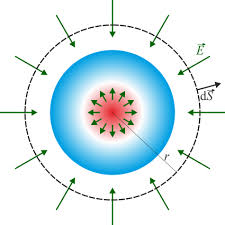
Ilustración conceptual de la Ley de Gauss
Las superficies equipotenciales son aquellas en las que el potencial eléctrico es constante. En dichas superficies, el trabajo necesario para mover una carga entre dos puntos es nulo. El campo eléctrico es siempre perpendicular a las superficies equipotenciales.
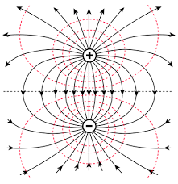
Visualización de superficies equipotenciales alrededor de cargas
\[V = \text{constante en una superficie equipotencial}\]
\[\vec{E} \cdot d\vec{l} = 0 \text{ para un desplazamiento } d\vec{l} \text{ sobre la superficie}\]
El campo eléctrico \(\vec{E}\) es perpendicular a la superficie equipotencial en cada punto.
Propiedades importantes:
- Las líneas del campo eléctrico son perpendiculares a las superficies equipotenciales
- El campo eléctrico es más intenso donde las superficies equipotenciales están más próximas entre sí
- Las superficies equipotenciales nunca se cruzan
- Para una carga puntual, las superficies equipotenciales son esferas concéntricas
Electricidad Avanzada
Energía Potencial Eléctrica
La energía potencial eléctrica es la energía que posee una carga eléctrica debido a su posición en un campo eléctrico. Representa el trabajo necesario para mover una carga desde un punto de referencia hasta una posición determinada contra las fuerzas eléctricas.
\[U_e = q \cdot V\]
Donde \(U_e\) es la energía potencial eléctrica, \(q\) es la carga y \(V\) es el potencial eléctrico.
\[U_e = \frac{Q_1 Q_2}{r}k\]
Para dos cargas puntuales, donde \(k\) es la constante de Coulomb, \(q_1\) y \(q_2\) son las cargas, y \(r\) es la distancia entre ellas.
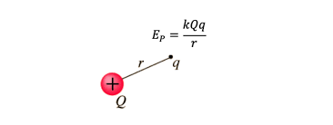
Representación visual de la energía potencial en un campo eléctrico
Potencial Eléctrico
El potencial eléctrico en un punto es la energía potencial eléctrica por unidad de carga que tendría una carga de prueba colocada en ese punto. Es una magnitud escalar que se mide en voltios (V).
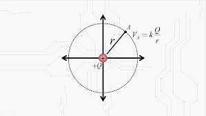
Visualización de potencial eléctrico en el espacio
\[V = \frac{U_e}{q} = k\frac{Q}{r}\]
Donde \(V\) es el potencial eléctrico, \(U_e\) es la energía potencial, \(q\) es la carga de prueba, \(Q\) es la carga que genera el campo, y \(r\) es la distancia.
Unidad: Voltio (V) = Joule/Coulomb (J/C)
Diferencia de Potencial
La diferencia de potencial entre dos puntos en un campo eléctrico es el trabajo por unidad de carga necesario para mover una carga de prueba desde un punto a otro. Esta diferencia de potencial, también conocida como voltaje, es fundamental en circuitos eléctricos.
\[\Delta V = V_b - V_a = -\int_a^b \vec{E} \cdot d\vec{l}\]
Donde \(\Delta V\) es la diferencia de potencial, \(V_a\) y \(V_b\) son los potenciales en los puntos a y b, \(\vec{E}\) es el campo eléctrico, y \(d\vec{l}\) es un elemento diferencial de longitud a lo largo de la trayectoria.
La diferencia de potencial es la base para entender el funcionamiento de baterías, generadores y todo tipo de fuentes de energía eléctrica.
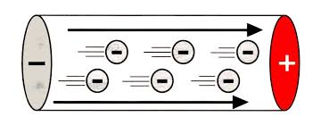
Ilustración de diferencia de potencial entre dos puntos
Capacitores o Condensadores y Capacitancia
Los capacitores son dispositivos que almacenan energía eléctrica en forma de campo eléctrico. Consisten en dos conductores separados por un material aislante o dieléctrico. La capacitancia es una medida de la capacidad del capacitor para almacenar carga eléctrica.
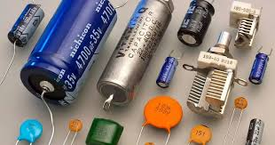
Diversos tipos de capacitores utilizados en electrónica
\[C = \frac{Q}{V}\]
Donde \(C\) es la capacitancia, \(Q\) es la carga almacenada, y \(V\) es la diferencia de potencial entre los conductores.
Unidad: Faradio (F) = Coulomb/Voltio (C/V)
Capacitor de placas paralelas:
\[C = \varepsilon_0 \varepsilon_r \frac{A}{d}\]
Donde \(A\) es el área de las placas, \(d\) es la distancia entre ellas, y \(\varepsilon_0\) y \(\varepsilon_r\) son las permitividades.
Capacitor cilíndrico:
\[C = \frac{2\pi\varepsilon_0\varepsilon_r L}{\ln(b/a)}\]
Donde \(L\) es la longitud, \(a\) y \(b\) son los radios interior y exterior.
Cálculo de Capacitancia en Serie y en Paralelo
Al igual que con las resistencias, los capacitores pueden conectarse en serie o en paralelo para obtener capacitancias equivalentes específicas. Estas configuraciones son fundamentales en el diseño de circuitos electrónicos.
Capacitores en Serie:
\[\frac{1}{C_{eq}} = \frac{1}{C_1} + \frac{1}{C_2} + \frac{1}{C_3} + ... + \frac{1}{C_n}\]
Para el caso especial de dos capacitores:
\[C_{eq} = \frac{C_1 \cdot C_2}{C_1 + C_2}\]
Capacitores en Paralelo:
\[C_{eq} = C_1 + C_2 + C_3 + ... + C_n\]
La capacitancia equivalente es simplemente la suma de las capacitancias individuales.

Ejemplo práctico:
Tres capacitores de 3µF, 6µF y 9µF se conectan en serie. La capacitancia equivalente es:
\[\frac{1}{C_{eq}} = \frac{1}{3\mu F} + \frac{1}{6\mu F} + \frac{1}{9\mu F} = \frac{6}{18\mu F} = \frac{1}{3\mu F}\]
\[C_{eq} = 1.5\mu F\]
Si estos mismos capacitores se conectan en paralelo:
\[C_{eq} = 3\mu F + 6\mu F + 9\mu F = 18\mu F\]
Electrodinámica
Definición de Electrodinámica
La electrodinámica es la rama de la física que estudia las interacciones entre campos eléctricos y magnéticos, así como el movimiento de cargas eléctricas y sus efectos. A diferencia de la electrostática, que se ocupa de cargas en reposo, la electrodinámica analiza cargas en movimiento y los fenómenos asociados a corrientes eléctricas.
La electrodinámica constituye la base teórica para entender el funcionamiento de dispositivos eléctricos, circuitos y sistemas de generación y transmisión de energía eléctrica.
Resistencia Eléctrica
La resistencia eléctrica es una medida de la oposición que presenta un material al paso de la corriente eléctrica. Es una propiedad intrínseca de los materiales y depende de su naturaleza, dimensiones y temperatura. Esta propiedad determina cuánta energía eléctrica se convierte en calor cuando una corriente fluye a través del material.
\[R = \rho \frac{L}{A}\]
Donde \(R\) es la resistencia eléctrica, \(\rho\) es la resistividad del material, \(L\) es la longitud del conductor, y \(A\) es el área de su sección transversal.
Resistencias eléctricas de diferentes valores
Tipos de Resistencias
Existen diversos tipos de resistencias eléctricas, cada una con características específicas que las hacen adecuadas para diferentes aplicaciones en circuitos electrónicos y sistemas eléctricos.
Resistencias fijas:
Son componentes cuyo valor resistivo no puede ser modificado después de su fabricación.
- Resistencias de carbón: Económicas, con tolerancias del 5-10%
- Resistencias de película metálica: Mayor precisión (1-2%), mejor estabilidad térmica
- Resistencias de alambre: Alta precisión y capacidad de manejo de potencia
Resistencias variables:
Permiten ajustar su valor resistivo dentro de un rango determinado.
- Potenciómetros: Ajustables manualmente, usados en controles de volumen
- Reóstatos: Diseñados para manejar corrientes más altas
- Trimmers: Ajustables con destornillador, para calibración fina de circuitos
Resistencias dependientes:
Su valor varía en función de factores físicos externos.
- Termistores (NTC/PTC): Varían con la temperatura
- Fotorresistencias (LDR): Varían con la intensidad luminosa
- Varistores: Varían con el voltaje aplicado, usados para protección
Resistencias especiales:
Diseñadas para aplicaciones específicas.
- Resistencias de precisión: Tolerancias menores al 0.1%, para instrumentación
- Resistencias de potencia: Capacidad para disipar altos niveles de energía
- Resistencias SMD: Montaje superficial, para circuitos miniaturizados
Ohm - Unidades de Resistencia
La unidad básica de resistencia eléctrica en el Sistema Internacional es el ohm (Ω), que representa la resistencia que genera una diferencia de potencial de un voltio cuando por ella circula una corriente de un amperio. En aplicaciones prácticas, se utilizan tanto múltiplos como submúltiplos del ohm.
Kilohm (kΩ):
Equivale a 1,000 ohms (10³ Ω). Común en circuitos electrónicos de baja potencia, como etapas de amplificación de señal.
Megaohm (MΩ):
Equivale a 1,000,000 ohms (10⁶ Ω). Utilizado en circuitos de alta impedancia y en aislamiento eléctrico.
Miliohm (mΩ):
Equivale a 0.001 ohms (10⁻³ Ω). Utilizado para medir resistencias muy pequeñas, como resistencias de contacto o de conductores de potencia.
Microohm (μΩ):
Equivale a 0.000001 ohms (10⁻⁶ Ω). Empleado en mediciones de precisión de conductores con muy baja resistencia.
Nanoohm (nΩ):
Equivale a 0.000000001 ohms (10⁻⁹ Ω). Utilizado en aplicaciones científicas y de investigación para materiales superconductores.
Picoohm (pΩ):
Equivale a 0.000000000001 ohms (10⁻¹² Ω). Empleado en mediciones extremadamente precisas en laboratorios de investigación avanzada.
Ley de Ohm
La Ley de Ohm es uno de los principios fundamentales de la electricidad, establecida por el físico alemán Georg Ohm en 1827. Esta ley establece que la corriente que fluye a través de un conductor es directamente proporcional a la diferencia de potencial aplicada e inversamente proporcional a la resistencia del conductor, siempre que las condiciones físicas (como la temperatura) se mantengan constantes.
\[I = \frac{V}{R}\]
Donde \(I\) es la intensidad de corriente (en amperios), \(V\) es la diferencia de potencial (en voltios), y \(R\) es la resistencia (en ohms).
Formas equivalentes:
\[V = I \times R\]
\[R = \frac{V}{I}\]
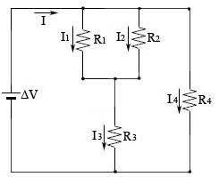
Aplicación de la Ley de Ohm en un circuito básico
La Ley de Ohm es aplicable a componentes lineales, donde la relación entre voltaje y corriente es constante. No todos los componentes eléctricos siguen esta ley (por ejemplo, diodos y transistores son no lineales).
Cálculo de Resistencias en Serie y Paralelo
En los circuitos eléctricos, las resistencias pueden combinarse de diferentes maneras para obtener valores específicos de resistencia equivalente. Las dos configuraciones básicas son en serie y en paralelo.
Resistencias en Serie:
\[R_{eq} = R_1 + R_2 + R_3 + ... + R_n\]
La resistencia equivalente es la suma de todas las resistencias individuales.
Ejemplo - Serie:
Para resistencias de 100Ω, 220Ω y 330Ω conectadas en serie:
\[R_{eq} = 100\Omega + 220\Omega + 330\Omega = 650\Omega\]
Resistencias en Paralelo:
\[\frac{1}{R_{eq}} = \frac{1}{R_1} + \frac{1}{R_2} + \frac{1}{R_3} + ... + \frac{1}{R_n}\]
Para el caso especial de dos resistencias:
\[R_{eq} = \frac{R_1 \times R_2}{R_1 + R_2}\]
Ejemplo - Paralelo:
Para resistencias de 100Ω y 200Ω conectadas en paralelo:
\[R_{eq} = \frac{100\Omega \times 200\Omega}{100\Omega + 200\Omega} = \frac{20000\Omega}{300\Omega} = 66.67\Omega\]
Leyes de Kirchhoff
Las Leyes de Kirchhoff, formuladas por Gustav Kirchhoff en 1845, son dos principios fundamentales que permiten analizar circuitos eléctricos complejos. Estas leyes son una aplicación de los principios de conservación de la carga y la energía en circuitos eléctricos.
Ley de Kirchhoff de Corrientes (LKC):
La suma algebraica de todas las corrientes que entran y salen de un nodo es igual a cero.
\[\sum_{k=1}^{n} I_k = 0\]
Donde \(I_k\) representa cada corriente que entra (positiva) o sale (negativa) del nodo.
Esta ley refleja el principio de conservación de la carga: la carga no puede acumularse en un nodo.
Ley de Kirchhoff de Voltajes (LKV):
La suma algebraica de todas las diferencias de potencial (voltajes) en cualquier trayectoria cerrada (malla) de un circuito es igual a cero.
\[\sum_{k=1}^{n} V_k = 0\]
Donde \(V_k\) representa cada caída o subida de tensión en la malla.
Esta ley refleja el principio de conservación de la energía en un circuito eléctrico.
Las Leyes de Kirchhoff, junto con la Ley de Ohm, permiten resolver prácticamente cualquier circuito eléctrico de corriente continua, por complejo que sea, mediante el planteamiento de sistemas de ecuaciones.
Intensidad Eléctrica
La intensidad eléctrica, también conocida como corriente eléctrica, es la cantidad de carga eléctrica que atraviesa una sección de un conductor por unidad de tiempo. Representa el flujo de electrones a través de un circuito eléctrico.
\[I = \frac{dQ}{dt}\]
Donde \(I\) es la intensidad de corriente, \(dQ\) es una cantidad infinitesimal de carga, y \(dt\) es un intervalo infinitesimal de tiempo.
Unidad: Amperio (A) = Coulomb/segundo (C/s)
Submúltiplos comunes:
- Miliamperio (mA): 10⁻³ A, usado en electrónica de baja potencia
- Microamperio (μA): 10⁻⁶ A, común en sensores y mediciones de precisión
- Nanoamperio (nA): 10⁻⁹ A, empleado en electrónica de muy baja potencia
- Picoamperio (pA): 10⁻¹² A, utilizado en mediciones de laboratorio de alta precisión
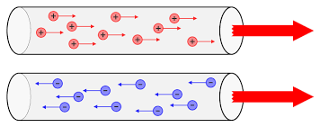
Visualización del flujo de corriente en un conductor
Tipos de corriente:
- Corriente continua (CC/DC): Flujo constante de carga en una dirección
- Corriente alterna (CA/AC): Flujo de carga que cambia de dirección periódicamente
Ejemplo: Análisis de un circuito de dos mallas
Consideremos un circuito con dos mallas que contiene:
- Fuente de 12V en la malla izquierda
- Fuente de 6V en la malla derecha
- Resistencias: R₁ = 2Ω, R₂ = 3Ω, R₃ = 4Ω

Aplicando la Ley de Kirchhoff de Voltajes (LKV) a la malla 1:
\[12V - I_1 \times 2\Omega - (I_1 - I_2) \times 4\Omega = 0\]
\[12V - 2\Omega \times I_1 - 4\Omega \times I_1 + 4\Omega \times I_2 = 0\]
\[12V - 6\Omega \times I_1 + 4\Omega \times I_2 = 0 \quad (1)\]
Aplicando LKV a la malla 2:
\[-6V + (I_1 - I_2) \times 4\Omega + I_2 \times 3\Omega = 0\]
\[-6V + 4\Omega \times I_1 - 4\Omega \times I_2 + 3\Omega \times I_2 = 0\]
\[-6V + 4\Omega \times I_1 - \Omega \times I_2 = 0 \quad (2)\]
Resolviendo el sistema de ecuaciones (1) y (2):
\[I_1 = 2.5A\]
\[I_2 = 1A\]
Verificando con la Ley de Kirchhoff de Corrientes (LKC) en el nodo central:
\[I_1 - (I_1 - I_2) - I_2 = 0\]
\[2.5A - (2.5A - 1A) - 1A = 2.5A - 1.5A - 1A = 0 \checkmark\]
Este ejemplo demuestra cómo las Leyes de Kirchhoff permiten analizar sistemáticamente circuitos complejos mediante el planteamiento de ecuaciones simultáneas.
Ejemplo: Cálculo de corriente y carga transferida
En un circuito con una diferencia de potencial de 220V y una resistencia de 440Ω, calculemos la intensidad de corriente y la carga transferida en 2 minutos.
Aplicando la Ley de Ohm para calcular la intensidad:
\[I = \frac{V}{R} = \frac{220V}{440\Omega} = 0.5A\]
La carga transferida en un tiempo \(t\) se calcula como:
\[Q = I \times t = 0.5A \times (2 \times 60s) = 0.5A \times 120s = 60C\]
Esto equivale a aproximadamente \(3.75 \times 10^{20}\) electrones, ya que la carga de un electrón es \(1.602 \times 10^{-19}C\).
Este ejemplo ilustra cómo la corriente eléctrica representa un flujo de carga a través de un conductor, y cómo podemos calcular la cantidad total de carga transferida durante un intervalo de tiempo específico.
Potencia Eléctrica
La potencia eléctrica es la cantidad de energía eléctrica transferida o transformada por unidad de tiempo. Representa la velocidad a la que se realiza trabajo eléctrico o se transfiere energía. En los circuitos eléctricos, la potencia es el producto del voltaje por la intensidad de corriente.
\[P = V \times I\]
Donde \(P\) es la potencia eléctrica, \(V\) es el voltaje, e \(I\) es la intensidad de corriente.
Combinando con la Ley de Ohm:
\[P = I^2 \times R = \frac{V^2}{R}\]
Unidad: Watt (W) = Joule/segundo (J/s) = Voltio × Amperio (V·A)
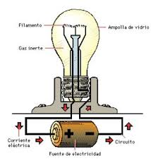
La potencia eléctrica determina la energía consumida por dispositivos
Aplicaciones prácticas:
Una bombilla de 60W conectada a 120V consume una corriente de:
\[I = \frac{P}{V} = \frac{60W}{120V} = 0.5A\]
Ejemplo: Cálculo de potencia en diferentes dispositivos
Analicemos varios dispositivos eléctricos comunes:
Bombilla de 60W a 120V:
\[I = \frac{P}{V} = \frac{60W}{120V} = 0.5A\]
La resistencia de la bombilla será:
\[R = \frac{V}{I} = \frac{120V}{0.5A} = 240\Omega\]
En 5 horas de uso, consumirá:
\[E = P \times t = 60W \times 5h = 300Wh = 0.3kWh\]
Calentador de 1500W a 220V:
\[I = \frac{P}{V} = \frac{1500W}{220V} \approx 6.82A\]
La resistencia del calentador será:
\[R = \frac{V^2}{P} = \frac{(220V)^2}{1500W} \approx 32.27\Omega\]
El calor generado en 1 hora:
\[Q = P \times t = 1500W \times 3600s = 5.4 \times 10^6J\]
Utilizando las distintas fórmulas de potencia, podemos realizar cálculos equivalentes:
Para la bombilla de 60W:
\[P = V \times I = 120V \times 0.5A = 60W\]
\[P = I^2 \times R = (0.5A)^2 \times 240\Omega = 0.25 \times 240 = 60W\]
\[P = \frac{V^2}{R} = \frac{(120V)^2}{240\Omega} = \frac{14400}{240} = 60W\]
Este ejemplo demuestra las diferentes formas de calcular la potencia eléctrica y su aplicación práctica en el análisis del consumo energético de dispositivos cotidianos.
Variación de la Resistencia con el Calor
La resistencia eléctrica de los materiales varía con la temperatura. Esta propiedad es fundamental para entender el comportamiento de los circuitos eléctricos en diferentes condiciones ambientales y para aplicaciones específicas como sensores de temperatura.
\[R_T = R_0[1 + \alpha(T - T_0)]\]
Donde \(R_T\) es la resistencia a la temperatura \(T\), \(R_0\) es la resistencia a la temperatura de referencia \(T_0\) (generalmente 20°C), y \(\alpha\) es el coeficiente de temperatura de la resistencia.
Comportamiento según tipo de material:
- Conductores metálicos: α positivo, la resistencia aumenta con la temperatura
- Semiconductores: α negativo, la resistencia disminuye con la temperatura
- Superconductores: La resistencia cae a cero por debajo de cierta temperatura crítica

El calor afecta significativamente a la resistencia eléctrica
Aplicaciones:
- Termistores NTC: Utilizados como sensores de temperatura y limitadores de corriente
- Termistores PTC: Empleados en protección contra sobrecorriente y calentadores autorregulados
- RTD (Detector de Temperatura por Resistencia): Sensores de temperatura de alta precisión basados en platino
El efecto de la temperatura en la resistencia es crítico en el diseño de dispositivos electrónicos. El sobrecalentamiento puede aumentar la resistencia y provocar más calentamiento, llevando a un ciclo de retroalimentación positiva que puede dañar los componentes si no se controla adecuadamente.
Ejemplo: Variación de resistencia en un conductor de cobre
Calculemos cómo varía la resistencia de un conductor de cobre cuando su temperatura aumenta de 20°C a 80°C.
- Resistencia inicial a 20°C (R₀): 10Ω
- Coeficiente de temperatura del cobre (α): 0.00393 °C⁻¹
- Temperatura inicial (T₀): 20°C
- Temperatura final (T): 80°C
Aplicando la fórmula de variación de resistencia con temperatura:
\[R_T = R_0[1 + \alpha(T - T_0)]\]
\[R_{80°C} = 10\Omega \times [1 + 0.00393 \times (80°C - 20°C)]\]
\[R_{80°C} = 10\Omega \times [1 + 0.00393 \times 60°C]\]
\[R_{80°C} = 10\Omega \times [1 + 0.2358]\]
\[R_{80°C} = 10\Omega \times 1.2358 = 12.358\Omega\]
Este ejemplo muestra que la resistencia del conductor de cobre aumenta aproximadamente un 23.6% cuando su temperatura se eleva 60°C. Este fenómeno es crucial en el diseño de sistemas eléctricos, especialmente en aplicaciones de alta potencia donde el calentamiento es significativo.
Aplicación práctica:
El aumento de resistencia con la temperatura explica por qué las bombillas incandescentes tienen una corriente inicial muy alta (pico de corriente) cuando se encienden, que luego disminuye a medida que el filamento se calienta y aumenta su resistencia.
Electroquímica y Celdas Electroquímicas
Definición de Electroquímica
La electroquímica es la rama de la química que estudia la relación entre la electricidad y las reacciones químicas, específicamente las reacciones que involucran la transferencia de electrones. Esta disciplina examina cómo las reacciones químicas pueden generar electricidad y, a la inversa, cómo la electricidad puede impulsar reacciones químicas que de otro modo no ocurrirían.
La electroquímica es fundamental para entender el funcionamiento de baterías, procesos de corrosión, galvanizado, refinación de metales y muchas tecnologías modernas de almacenamiento y conversión de energía.
Oxidación y Reducción
En el corazón de la electroquímica están los procesos de oxidación y reducción (redox). Estos procesos implican la transferencia de electrones entre diferentes especies químicas, lo que resulta en cambios en sus estados de oxidación.
Oxidación:
Proceso en el cual una especie pierde electrones, aumentando su estado de oxidación.
\[Zn \rightarrow Zn^{2+} + 2e^-\]
El zinc metálico pierde dos electrones y se oxida a ion zinc.
Reducción:
Proceso en el cual una especie gana electrones, disminuyendo su estado de oxidación.
\[Cu^{2+} + 2e^- \rightarrow Cu\]
El ion cobre gana dos electrones y se reduce a cobre metálico.
En una reacción redox completa, siempre ocurren tanto la oxidación como la reducción simultáneamente: una especie se oxida (pierde electrones) mientras otra se reduce (gana electrones).
Celdas Electroquímicas
Una celda electroquímica es un dispositivo que genera energía eléctrica a partir de reacciones químicas, o utiliza la energía eléctrica para impulsar reacciones químicas. Existen dos tipos principales de celdas electroquímicas: las celdas galvánicas (o voltaicas) y las celdas electrolíticas.
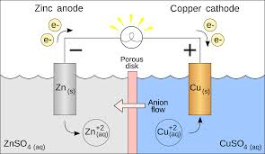
Una batería es un ejemplo común de celda galvánica
Componentes básicos de una celda electroquímica:
- Electrodos: Conductores donde ocurren las reacciones de oxidación y reducción
- Electrolito: Medio que permite el flujo de iones entre los electrodos
- Puente salino: En algunas celdas, mantiene el equilibrio de carga entre compartimentos
- Circuito externo: Permite el flujo de electrones de un electrodo a otro
Celdas Galvánicas
Una celda galvánica (o voltaica) convierte la energía química en energía eléctrica a través de reacciones redox espontáneas. En estas celdas, la reacción química impulsa el flujo de electrones a través de un circuito externo, generando una corriente eléctrica.
Ejemplo: Celda Daniell (Zn|Zn²⁺||Cu²⁺|Cu)
Ánodo (oxidación): \[Zn \rightarrow Zn^{2+} + 2e^-\]
Cátodo (reducción): \[Cu^{2+} + 2e^- \rightarrow Cu\]
Reacción global: \[Zn + Cu^{2+} \rightarrow Zn^{2+} + Cu\]
En una celda galvánica, el ánodo es el electrodo negativo donde ocurre la oxidación, mientras que el cátodo es el electrodo positivo donde ocurre la reducción.
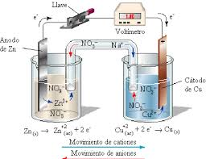
Representación esquemática de una celda galvánica
Celdas Electrolíticas
Una celda electrolítica utiliza energía eléctrica para impulsar reacciones químicas no espontáneas. En estas celdas, una fuente externa de electricidad fuerza los electrones a moverse en dirección opuesta a la que irían naturalmente, provocando reacciones químicas que almacenan energía.
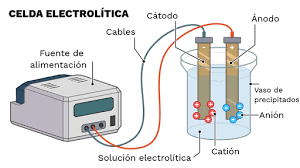
Electrólisis: un ejemplo de proceso en celda electrolítica
Ejemplo: Electrólisis del agua
Ánodo (oxidación): \[2H_2O \rightarrow O_2 + 4H^+ + 4e^-\]
Cátodo (reducción): \[4H_2O + 4e^- \rightarrow 2H_2 + 4OH^-\]
Reacción global: \[2H_2O \rightarrow 2H_2 + O_2\]
En una celda electrolítica, el ánodo es el electrodo positivo donde ocurre la oxidación, mientras que el cátodo es el electrodo negativo donde ocurre la reducción (opuesto a las celdas galvánicas).
Potencial Estándar de Electrodo
El potencial estándar de electrodo (E°) es una medida de la tendencia de una especie química a adquirir electrones y reducirse. Estos valores se determinan experimentalmente comparando cada semirreacción con la reacción de referencia del electrodo estándar de hidrógeno (SHE), al cual se le asigna un potencial de 0 voltios.
Ejemplo: Para la semirreacción \[Cu^{2+} + 2e^- \rightarrow Cu\]
El potencial estándar es \[E° = +0.34V\]
Un valor positivo indica que el Cu²⁺ se reduce más fácilmente que el H⁺.
Serie electroquímica:
La serie electroquímica ordena los elementos según su potencial estándar de reducción, permitiendo predecir:
- Qué metal desplazará a otro en una solución de sus iones
- Qué reacciones redox serán espontáneas
- La dirección de flujo de electrones en una celda galvánica
Ecuación de Nernst
La ecuación de Nernst permite calcular el potencial de una celda electroquímica bajo condiciones no estándar. Relaciona el potencial de la celda con el potencial estándar y las concentraciones (o actividades) de las especies involucradas en la reacción redox.
\[E = E° - \frac{RT}{nF}\ln Q\]
A 25°C, esto se simplifica a:
\[E = E° - \frac{0.0592V}{n}\log Q\]
Donde \(E\) es el potencial de la celda, \(E°\) es el potencial estándar, \(R\) es la constante de los gases, \(T\) es la temperatura absoluta, \(n\) es el número de electrones transferidos, \(F\) es la constante de Faraday, y \(Q\) es el cociente de reacción.
La ecuación de Nernst es fundamental en electroquímica para entender cómo las concentraciones de reactivos y productos afectan al potencial de una celda, así como para determinar constantes de equilibrio de reacciones redox.
Aplicaciones de la Electroquímica
La electroquímica tiene numerosas aplicaciones prácticas y tecnológicas que afectan nuestra vida cotidiana y diversos sectores industriales.
Almacenamiento de energía:
- Baterías (Li-ion, plomo-ácido, Ni-MH)
- Celdas de combustible
- Supercapacitores
Procesos industriales:
- Electrometalurgia (refinación de aluminio)
- Galvanoplastia y electrodeposición
- Producción de cloro y soda cáustica
Otras aplicaciones:
- Sensores electroquímicos (glucómetros)
- Protección contra la corrosión
- Técnicas analíticas (voltametría)
Leyes de Faraday de la Electrólisis
Las leyes de Faraday de la electrólisis establecen relaciones cuantitativas entre la cantidad de sustancia producida en un electrodo durante la electrólisis y la cantidad de electricidad que pasa a través de la celda electrolítica.
Primera Ley de Faraday:
La masa de una sustancia producida en un electrodo es directamente proporcional a la cantidad de electricidad que pasa a través de la celda.
\[m = k \times Q\]
Donde \(m\) es la masa, \(k\) es una constante de proporcionalidad, y \(Q\) es la carga eléctrica.
Segunda Ley de Faraday:
Para una cantidad dada de electricidad, la masa de una sustancia depositada en un electrodo es directamente proporcional a su masa equivalente.
\[m = \frac{M \times Q}{F \times z}\]
Donde \(M\) es la masa molar, \(F\) es la constante de Faraday (96,485 C/mol), y \(z\) es el número de electrones transferidos por ion.
Ejemplo de aplicación:
Calcular la masa de cobre depositada cuando una corriente de 2.00 A fluye durante 30.0 minutos en una solución de sulfato de cobre (II).
Reacción: \(Cu^{2+} + 2e^- \rightarrow Cu\)
Cantidad de carga: \(Q = I \times t = 2.00 \text{ A} \times 1800 \text{ s} = 3600 \text{ C}\)
Masa de cobre: \(m = \frac{63.55 \text{ g/mol} \times 3600 \text{ C}}{96485 \text{ C/mol} \times 2} = 1.18 \text{ g}\)
Aplicaciones industriales de la electroquímica
La electroquímica representa una intersección fascinante entre la química y la electricidad, con aplicaciones que van desde dispositivos cotidianos hasta procesos industriales avanzados. El entendimiento de sus principios fundamentales es esencial para el desarrollo de tecnologías más eficientes y sostenibles de almacenamiento y conversión de energía.
Herramientas de Medición Eléctrica
Galvanómetro
El galvanómetro es un instrumento que detecta y mide pequeñas cantidades de corriente eléctrica. Funciona según el principio de que una corriente eléctrica en un campo magnético experimenta una fuerza proporcional a la intensidad de la corriente, permitiendo así su medición.
Principio de funcionamiento:
El galvanómetro utiliza la interacción entre un campo magnético y una corriente eléctrica. Cuando la corriente fluye a través de una bobina situada en un campo magnético, se genera una fuerza que produce un desplazamiento proporcional a la intensidad de la corriente.
Aplicaciones:
- Detección de corrientes muy pequeñas
- Base para construir otros instrumentos como voltímetros y amperímetros
- Investigación científica donde se requiere alta sensibilidad
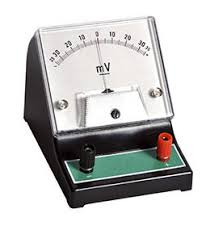
Galvanómetro de bobina móvil, utilizado para detectar pequeñas corrientes eléctricas
Voltímetro
El voltímetro es un instrumento que se utiliza para medir la diferencia de potencial (voltaje) entre dos puntos de un circuito eléctrico. Se conecta en paralelo con el componente cuya diferencia de potencial se desea medir.

Voltímetro analógico utilizado para medir diferencias de potencial
Conexión en el circuito:
El voltímetro debe conectarse en paralelo con el elemento del circuito cuyo voltaje se desea medir. Un voltímetro ideal tiene resistencia infinita para no afectar el circuito que está midiendo.
Tipos de voltímetros:
- Analógicos: Basados en galvanómetros con una resistencia en serie
- Digitales: Utilizan convertidores analógico-digitales y ofrecen mayor precisión
- Electrostáticos: Para mediciones de alto voltaje sin consumir corriente
Amperímetro
El amperímetro es un instrumento diseñado para medir la intensidad de corriente eléctrica que circula por un circuito. A diferencia del voltímetro, el amperímetro se conecta en serie con el circuito cuya corriente se desea medir.
Principio de funcionamiento:
El amperímetro básicamente es un galvanómetro con una resistencia en paralelo (shunt). Esta configuración permite que solo una fracción conocida de la corriente total pase por el galvanómetro, extendiendo así su rango de medición.
Características ideales:
- Resistencia interna muy baja (idealmente cero)
- No debe alterar significativamente el circuito que está midiendo
- Capacidad para medir diferentes rangos de corriente
- Protección contra sobrecargas
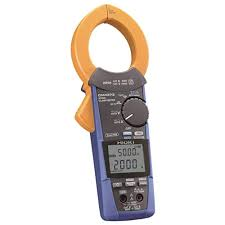
Amperímetro analógico para la medición de corriente eléctrica
Óhmetro
El óhmetro es un instrumento utilizado para medir la resistencia eléctrica de un componente o circuito. Funciona aplicando una pequeña corriente conocida a través del componente y midiendo la caída de voltaje resultante para calcular la resistencia según la Ley de Ohm.
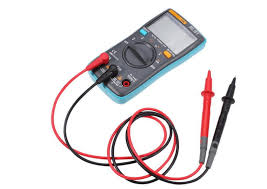
Escala de óhmetro en un multímetro moderno
Consideraciones importantes:
- El componente debe estar desconectado del circuito para medirlo correctamente
- La escala del óhmetro es no lineal (escala inversa en instrumentos analógicos)
- Requiere calibración periódica para mantener la precisión
- Puede dañar componentes sensibles debido a la corriente de prueba
Tipos de mediciones:
- Resistencia baja: Para conductores, fusibles, interruptores
- Resistencia media: Para la mayoría de componentes electrónicos
- Alta resistencia/aislamiento: Para evaluar la calidad de aislantes
Multímetro
El multímetro, también conocido como polímetro o tester, es un instrumento electrónico que combina varias funciones de medición en un solo dispositivo. Típicamente puede medir voltaje (AC/DC), corriente, resistencia y, en modelos más avanzados, capacitancia, frecuencia, temperatura y más.
Tipos de multímetros:
- Analógicos: Utilizan un galvanómetro con diferentes circuitos de acondicionamiento
- Digitales (DMM): Ofrecen lectura numérica directa, mayor precisión y funciones adicionales
- Multímetros de banco: De mayor precisión, utilizados en laboratorios y entornos industriales
Funciones comunes:
- Medición de voltaje AC y DC
- Medición de corriente AC y DC
- Medición de resistencia
- Prueba de continuidad con indicador sonoro
- Prueba de diodos y transistores
- Medición de capacitancia
- Medición de frecuencia
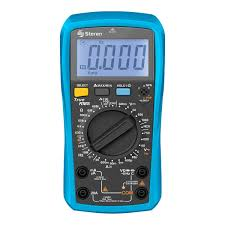
Multímetro digital moderno con diversas funciones de medición
Seguridad en el uso:
Los multímetros modernos incluyen protecciones como fusibles, categorías de seguridad (CAT I-IV) y aislamiento. Es fundamental seleccionar el multímetro adecuado para el entorno de trabajo y seguir las precauciones de seguridad durante su uso, especialmente cuando se trabaja con altos voltajes o corrientes.
Magnetismo
Origen de los imanes
El magnetismo tiene su origen en el movimiento de cargas eléctricas. A nivel atómico, los electrones tienen un momento magnético intrínseco debido a su spin y también generan campos magnéticos cuando se mueven en órbitas alrededor del núcleo. En los materiales ferromagnéticos, como el hierro, estos momentos magnéticos pueden alinearse, creando un campo magnético macroscópico permanente.
Características fundamentales:
Los imanes poseen dos regiones, denominadas polos, donde se concentra la fuerza magnética. La existencia de estos polos está relacionada con la orientación del campo magnético, que fluye del polo norte al polo sur en el exterior del imán.
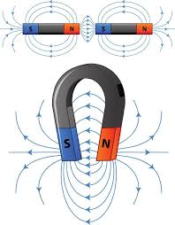
Representación de un imán con sus polos norte (rojo) y sur (azul)
Magnetita
La magnetita (Fe₃O₄) es un mineral ferromagnético natural que fue el primer material magnético conocido por la humanidad. Descubierta hace miles de años en una región llamada Magnesia en Grecia (de donde proviene el término "magnetismo"), la magnetita posee propiedades magnéticas intrínsecas debido a su estructura cristalina y la distribución de iones de hierro en ella.
La magnetita fue utilizada en las primeras brújulas, permitiendo a navegantes antiguos orientarse utilizando el campo magnético terrestre, lo que revolucionó la navegación marítima.
Ley del magnetismo
Las leyes fundamentales del magnetismo establecen que polos magnéticos iguales se repelen y polos opuestos se atraen. Esta propiedad es análoga a la interacción entre cargas eléctricas, aunque con una diferencia fundamental: mientras las cargas eléctricas pueden existir aisladamente, los polos magnéticos siempre se presentan en pares (no existen monopolos magnéticos).
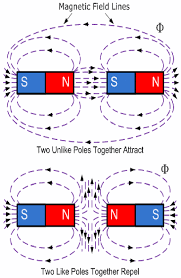
Interacción entre imanes: atracción y repulsión entre polos
Si se corta un imán en dos partes, cada una formará un nuevo imán completo con sus propios polos norte y sur, demostrando la imposibilidad de aislar un polo magnético.
Ley de Coulomb del magnetismo
La Ley de Coulomb del magnetismo, análoga a la ley eléctrica, describe la fuerza entre dos polos magnéticos. Esta fuerza es directamente proporcional al producto de las intensidades de los polos e inversamente proporcional al cuadrado de la distancia que los separa.
La fuerza magnética entre dos polos viene dada por la ecuación:
\[ F = \frac{m_1 \cdot m_2}{r^2}k \]
Donde:
- \(F\) es la fuerza magnética
- \(k\) es una constante de proporcionalidad
- \(m_1\) y \(m_2\) son las intensidades de los polos magnéticos
- \(r\) es la distancia entre los polos
El signo de la fuerza será positivo si es repulsiva (polos iguales) y negativo si es atractiva (polos opuestos).
Polos magnéticos
Los polos magnéticos son las regiones de un imán donde la fuerza magnética es más intensa. Convencionalmente, se designan como polo norte y polo sur. El polo norte de un imán es aquel que, cuando el imán puede girar libremente, se orienta hacia el norte geográfico de la Tierra.
Campo magnético terrestre:
El campo magnético de la Tierra actúa como si hubiera un gigantesco imán en su interior. Curiosamente, el polo norte magnético está cerca del polo sur geográfico y viceversa, ya que polos magnéticos opuestos se atraen.
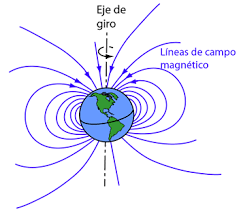
Representación del campo magnético terrestre
Fórmulas de magnetismo
El magnetismo está descrito por varias fórmulas fundamentales que relacionan diferentes magnitudes magnéticas como el campo magnético, el flujo magnético, la permeabilidad y la fuerza magnética.
Campo magnético generado por un conductor rectilíneo:
\[ B = \frac{\mu_0 \cdot I}{2\pi r} \]
Donde:
- \(B\) es el campo magnético (en teslas)
- \(\mu_0\) es la permeabilidad del vacío (\(4\pi \times 10^{-7} \text{ T·m/A}\))
- \(I\) es la corriente eléctrica (en amperios)
- \(r\) es la distancia desde el conductor (en metros)
Flujo magnético:
\[ \Phi_B = B \cdot A \cdot \cos(\theta) \]
Donde:
- \(\Phi_B\) es el flujo magnético (en webers)
- \(B\) es el campo magnético (en teslas)
- \(A\) es el área de la superficie
- \(\theta\) es el ángulo entre el campo magnético y la normal a la superficie
Fuerza magnética sobre una carga en movimiento:
\[ F = q \cdot v \times B \]
Donde:
- \(F\) es la fuerza magnética (en newtons)
- \(q\) es la carga eléctrica (en coulombs)
- \(v\) es la velocidad de la carga (en metros por segundo)
- \(B\) es el campo magnético (en teslas)
- \(\times\) indica el producto vectorial
Las ecuaciones de Maxwell son el conjunto de ecuaciones fundamentales que unifican la electricidad y el magnetismo en la teoría electromagnética, mostrando que son manifestaciones diferentes del mismo fenómeno físico.
Electromagnetismo
Definición
El electromagnetismo es la rama de la física que estudia la interacción entre la electricidad y el magnetismo, considerándolos como dos manifestaciones diferentes de un mismo fenómeno físico. Esta teoría unifica la electricidad, el magnetismo y la luz como diferentes manifestaciones de los campos electromagnéticos.
El electromagnetismo es uno de los pilares fundamentales de la física moderna, permitiéndonos comprender desde el funcionamiento de dispositivos electrónicos hasta la naturaleza de la luz.
Nombre de odio (electromasoquismo)
El término "electromasoquismo" es una expresión humorística utilizada informalmente por estudiantes y profesionales que enfrentan las complejidades y desafíos del estudio del electromagnetismo. Hace referencia a la dificultad conceptual y matemática que supone comprender plenamente esta rama de la física, especialmente las ecuaciones de Maxwell y la visualización de campos en tres dimensiones.
A pesar de su nombre jocoso, esta percepción refleja el rigor intelectual necesario para dominar el electromagnetismo, una disciplina que requiere una sólida base matemática y capacidad de abstracción espacial.
Relación entre la electricidad y el magnetismo
La relación fundamental entre la electricidad y el magnetismo fue descubierta en el siglo XIX, revelando que no son fenómenos independientes sino manifestaciones de la misma fuerza fundamental. Las cargas eléctricas en movimiento generan campos magnéticos, mientras que los campos magnéticos variables inducen campos eléctricos.
Principios fundamentales:
- Una corriente eléctrica genera un campo magnético a su alrededor
- Un campo magnético variable induce una corriente eléctrica en un conductor
- Una carga eléctrica en movimiento dentro de un campo magnético experimenta una fuerza
- Un imán en movimiento cerca de un conductor genera una corriente eléctrica
Visualización conceptual de la interacción electromagnética
Fórmulas del electromagnetismo
El electromagnetismo está descrito matemáticamente por un conjunto de ecuaciones fundamentales que relacionan los campos eléctricos y magnéticos con sus fuentes (cargas y corrientes). Las ecuaciones de Maxwell son la síntesis matemática completa de esta teoría.
Ecuaciones de Maxwell (forma diferencial):
\[ \nabla \cdot \vec{E} = \frac{\rho}{\varepsilon_0} \quad \text{(Ley de Gauss)} \]
\[ \nabla \cdot \vec{B} = 0 \quad \text{(Ley de Gauss para el magnetismo)} \]
\[ \nabla \times \vec{E} = -\frac{\partial \vec{B}}{\partial t} \quad \text{(Ley de Faraday-Lenz)} \]
\[ \nabla \times \vec{B} = \mu_0 \vec{J} + \mu_0 \varepsilon_0 \frac{\partial \vec{E}}{\partial t} \quad \text{(Ley de Ampère-Maxwell)} \]
Fuerza de Lorentz:
La fuerza experimentada por una partícula cargada en presencia de campos eléctricos y magnéticos:
\[ \vec{F} = q(\vec{E} + \vec{v} \times \vec{B}) \]
Donde:
- \(\vec{F}\) es la fuerza sobre la partícula
- \(q\) es la carga de la partícula
- \(\vec{E}\) es el campo eléctrico
- \(\vec{v}\) es la velocidad de la partícula
- \(\vec{B}\) es el campo magnético
Campos y fuerzas magnéticas
Los campos magnéticos son regiones del espacio donde una carga eléctrica en movimiento experimenta una fuerza perpendicular tanto a su velocidad como a la dirección del campo. A diferencia de los campos eléctricos, los campos magnéticos no realizan trabajo sobre las cargas en movimiento, sino que cambian la dirección de su movimiento.

Representación artística de líneas de campo magnético
Características de los campos magnéticos:
- Se representan mediante líneas de campo cerradas
- Su dirección viene dada por la regla de la mano derecha
- La intensidad del campo se mide en teslas (T) o gauss (G)
- No existen monopolos magnéticos (los polos siempre vienen en pares)
El campo magnético generado por una corriente en un conductor circular (bobina):
\[ B = \frac{\mu_0 I N}{2R} \]
Donde \(N\) es el número de vueltas y \(R\) es el radio de la bobina.
Transformadores electromagnéticos
Los transformadores son dispositivos electromagnéticos que transfieren energía eléctrica de un circuito a otro mediante inducción electromagnética, permitiendo aumentar o disminuir el voltaje de una corriente alterna. Constan fundamentalmente de dos bobinas (primario y secundario) enrolladas sobre un núcleo ferromagnético común.
Principio de funcionamiento:
Cuando una corriente alterna circula por el bobinado primario, genera un campo magnético variable que induce una fuerza electromotriz en el bobinado secundario. La relación entre los voltajes de entrada y salida depende de la relación entre el número de espiras de ambos bobinados.
Relación entre voltajes y número de espiras:
\[ \frac{V_s}{V_p} = \frac{N_s}{N_p} \]
Donde:
- \(V_s\) y \(V_p\) son los voltajes en el secundario y primario
- \(N_s\) y \(N_p\) son el número de espiras en cada bobinado
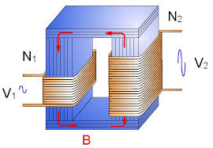
Transformador eléctrico industrial
Aplicaciones comunes:
- Redes de distribución eléctrica
- Adaptadores y cargadores de dispositivos electrónicos
- Fuentes de alimentación industriales
- Hornos de inducción
- Equipos médicos como máquinas de rayos X
Ciclotrón
El ciclotrón es un acelerador de partículas circular que utiliza la combinación de un campo magnético estático y un campo eléctrico oscilante para acelerar partículas cargadas. Fue inventado por Ernest O. Lawrence en 1932 y representó un avance significativo en la física nuclear experimental.
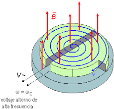
Representación artística de un acelerador de partículas
Funcionamiento:
Las partículas cargadas son inyectadas cerca del centro del dispositivo y se mueven en trayectorias semicirculares dentro de dos cámaras en forma de "D" (llamadas "dees"). Un campo magnético perpendicular al plano de movimiento hace que las partículas sigan trayectorias curvas, mientras que un campo eléctrico alternante entre las dos "dees" las acelera cada vez que cruzan la brecha entre ellas.
La frecuencia de resonancia del ciclotrón está dada por:
\[ f = \frac{qB}{2\pi m} \]
Donde:
- \(q\) es la carga de la partícula
- \(B\) es el campo magnético
- \(m\) es la masa de la partícula
Experimento de Oersted
El experimento de Oersted, realizado por el físico danés Hans Christian Oersted en 1820, fue uno de los descubrimientos fundamentales que estableció la conexión entre la electricidad y el magnetismo. Oersted observó que una corriente eléctrica que fluía a través de un cable producía un campo magnético capaz de deflectar una brújula cercana.
Relevancia histórica:
Este experimento fue revolucionario porque demostró por primera vez que los fenómenos eléctricos y magnéticos estaban relacionados. Antes del descubrimiento de Oersted, la electricidad y el magnetismo se consideraban fuerzas completamente distintas de la naturaleza.
Consecuencias científicas:
El descubrimiento de Oersted llevó a una serie de investigaciones por parte de otros científicos como Ampère, Faraday y Maxwell, que eventualmente culminaron en la teoría unificada del electromagnetismo y las ecuaciones de Maxwell, fundamentales para la física moderna.
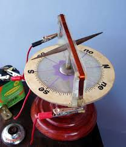
Brújula similar a la utilizada por Oersted en su experimento
Momento de torsión de una espira
Cuando una espira de corriente se coloca en un campo magnético uniforme, experimenta un momento de torsión que tiende a orientar su vector de área perpendicular al campo magnético. Este principio es fundamental para el funcionamiento de motores eléctricos y otros dispositivos electromagnéticos.
El momento de torsión sobre una espira rectangular de corriente en un campo magnético uniforme viene dado por:
\[ \tau = N I A B \sin \theta \]
Donde:
- \(\tau\) es el momento de torsión
- \(N\) es el número de vueltas de la espira
- \(I\) es la corriente que circula por la espira
- \(A\) es el área de la espira
- \(B\) es la magnitud del campo magnético
- \(\theta\) es el ángulo entre el vector de área de la espira y el campo magnético
El momento de torsión máximo se produce cuando la espira está paralela al campo magnético (\(\theta = 90°\)), mientras que es cero cuando la espira está perpendicular al campo (\(\theta = 0°\)).
Ley de Weber
La Ley de Weber, desarrollada por el físico alemán Wilhelm Eduard Weber, es una generalización de la Ley de Coulomb que intenta explicar las interacciones electromagnéticas considerando no solo la posición relativa de las cargas, sino también sus velocidades y aceleraciones relativas.
La fuerza entre dos cargas según la ley de Weber puede expresarse como:
\[ F = \frac{q_1 q_2}{4\pi\varepsilon_0 r^2}\left(1 - \frac{1}{2c^2}\frac{dr^2}{dt^2} + \frac{1}{c^2}r\frac{d^2r}{dt^2}\right) \]
Donde:
- \(q_1\) y \(q_2\) son las cargas eléctricas
- \(r\) es la distancia entre las cargas
- \(c\) es la velocidad de la luz
- \(\frac{dr}{dt}\) es la velocidad relativa
- \(\frac{d^2r}{dt^2}\) es la aceleración relativa
Aunque la Ley de Weber fue eventualmente superada por la teoría electromagnética de Maxwell, representó un importante intento de unificar los fenómenos eléctricos y magnéticos, y anticipó aspectos de la relatividad especial al incorporar la velocidad de la luz en sus ecuaciones.
Efecto motor y electromotriz
El efecto motor se refiere a la producción de movimiento mecánico a partir de la energía eléctrica, mientras que el efecto electromotriz es el fenómeno inverso: la generación de una diferencia de potencial eléctrico (fuerza electromotriz o fem) a partir del movimiento mecánico en un campo magnético.
Efecto motor:
Se basa en la fuerza de Lorentz: cuando una corriente eléctrica atraviesa un conductor situado en un campo magnético, se genera una fuerza perpendicular tanto a la dirección de la corriente como a la del campo magnético. Esta fuerza puede producir movimiento rotatorio o lineal, dependiendo de la configuración del dispositivo.
La fuerza sobre un conductor de longitud \(L\) por el que circula una corriente \(I\) en un campo magnético \(B\) es:
\[ F = I L B \sin\theta \]
Donde \(\theta\) es el ángulo entre la dirección de la corriente y el campo magnético.
Efecto electromotriz:
Se fundamenta en la ley de inducción de Faraday: un cambio en el flujo magnético a través de un circuito induce una fuerza electromotriz proporcional a la tasa de cambio del flujo. Esto puede ocurrir por el movimiento de un conductor en un campo magnético o por la variación del propio campo magnético.
La fuerza electromotriz inducida es:
\[ \mathcal{E} = -\frac{d\Phi_B}{dt} \]
Donde \(\Phi_B\) es el flujo magnético a través del circuito.
Estos dos efectos son fundamentales para la tecnología moderna: el efecto motor es la base de todos los motores eléctricos, mientras que el efecto electromotriz permite el funcionamiento de generadores eléctricos, transformando energía mecánica en eléctrica.
Acústica
Definición
La acústica es la rama de la física que estudia las propiedades y comportamientos de las ondas sonoras. Incluye el estudio de la propagación de sonidos, la interferencia y superposición de ondas, y la relación entre la frecuencia y la amplitud de las ondas.
La acústica es fundamental para entender el sonido, su producción, transmisión y percepción, y tiene aplicaciones en campos como la música, la ingeniería acústica, la medicina y la tecnología.
Ondas mecánicas
Las ondas mecánicas son perturbaciones que se propagan a través de un medio material, transmitiendo energía sin transporte de materia. A diferencia de las ondas electromagnéticas, las ondas mecánicas no pueden propagarse en el vacío, ya que requieren un medio físico para su transmisión.
Características principales:
- Requieren un medio material para propagarse
- Transmiten energía sin transporte de materia
- Las partículas del medio oscilan alrededor de posiciones de equilibrio
- Pueden experimentar reflexión, refracción, difracción e interferencia
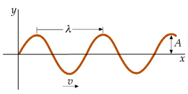
Visualización de ondas mecánicas en un medio material
Ondas sonoras
Las ondas sonoras son un tipo específico de ondas mecánicas longitudinales que se propagan a través de un medio elástico (sólido, líquido o gaseoso) como resultado de la vibración de partículas. El sonido que percibimos es la interpretación que hace nuestro cerebro de estas ondas cuando llegan a nuestro oído.
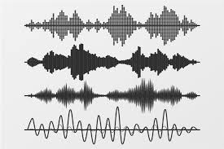
Representación visual de ondas sonoras
Propiedades fundamentales:
- Frecuencia: Número de oscilaciones por segundo (Hertz)
- Amplitud: Intensidad o volumen del sonido
- Timbre: Cualidad que distingue dos sonidos de igual frecuencia y amplitud
- Duración: Tiempo durante el cual se mantiene el sonido
El rango auditivo humano típico abarca frecuencias entre 20 Hz y 20.000 Hz. Los sonidos por debajo de 20 Hz se denominan infrasonidos, mientras que aquellos por encima de 20.000 Hz son ultrasonidos.
Tipos de ondas
Las ondas se pueden clasificar según diferentes criterios, como la dirección de propagación, la dimensionalidad o el medio en que se propagan. Esta clasificación es fundamental para entender los diferentes fenómenos ondulatorios en la acústica.
Según la dirección de vibración:
- Ondas longitudinales: Las partículas vibran en la misma dirección de propagación de la onda (ej. ondas sonoras en aire)
- Ondas transversales: Las partículas vibran perpendicularmente a la dirección de propagación (ej. ondas en una cuerda)
Según su dimensionalidad:
- Ondas unidimensionales: Se propagan en una sola dirección (ej. ondas en una cuerda)
- Ondas bidimensionales: Se propagan en un plano (ej. ondas en la superficie del agua)
- Ondas tridimensionales: Se propagan en todas direcciones (ej. ondas sonoras en el aire)
Según su periodicidad:
- Ondas periódicas: El patrón de la onda se repite a intervalos regulares
- Ondas no periódicas: No siguen un patrón repetitivo
- Pulsos: Perturbaciones aisladas que se propagan en el medio
Según el medio de propagación:
- Ondas mecánicas: Requieren un medio material (ej. sonido)
- Ondas electromagnéticas: No requieren medio material, pueden propagarse en el vacío (ej. luz)
- Ondas de materia: Asociadas a partículas subatómicas (ej. ondas de De Broglie)
Velocidad de onda
La velocidad de una onda es la rapidez con la que se propaga la perturbación a través del medio. Esta velocidad depende de las propiedades físicas del medio, como su densidad y elasticidad, y no de las características de la onda como su frecuencia o amplitud.
La ecuación fundamental que relaciona la velocidad de onda con su frecuencia y longitud de onda es:
\[ v = \lambda \cdot f \]
Donde:
- \(v\) es la velocidad de la onda (en m/s)
- \(\lambda\) es la longitud de onda (en m)
- \(f\) es la frecuencia (en Hz)
Para ondas en una cuerda tensada, la velocidad viene dada por:
\[ v = \sqrt{\frac{T}{\mu}} \]
Donde:
- \(T\) es la tensión de la cuerda (en N)
- \(\mu\) es la densidad lineal de masa (en kg/m)
Onda transversal y onda estacionaria
Las ondas transversales son aquellas en las que el desplazamiento de las partículas del medio es perpendicular a la dirección de propagación de la onda. Ejemplos típicos son las ondas en una cuerda o las ondas electromagnéticas.
Las ondas estacionarias, por otro lado, se forman cuando dos ondas de igual frecuencia y amplitud viajan en direcciones opuestas a través del mismo medio, produciendo un patrón donde algunos puntos (nodos) permanecen inmóviles, mientras que otros (antinodos) vibran con máxima amplitud.
La ecuación de una onda transversal viajera puede expresarse como:
\[ y(x,t) = A \sin(kx - \omega t) \]
Donde:
- \(A\) es la amplitud
- \(k\) es el número de onda (\(k = 2\pi/\lambda\))
- \(\omega\) es la frecuencia angular (\(\omega = 2\pi f\))
- \(x\) es la posición
- \(t\) es el tiempo
La ecuación de una onda estacionaria es:
\[ y(x,t) = [2A \sin(kx)] \cos(\omega t) \]
Los nodos se producen en posiciones donde \(\sin(kx) = 0\), es decir, en:
\[ x = n \cdot \frac{\lambda}{2} \quad \text{donde } n = 0, 1, 2, ... \]
Las ondas estacionarias son fundamentales en el funcionamiento de instrumentos musicales de cuerda y viento, donde la longitud del instrumento determina las frecuencias de resonancia y, por tanto, las notas que puede producir.
Instrumentos musicales
Los instrumentos musicales son dispositivos diseñados para producir sonidos con características específicas (frecuencia, timbre, duración). Desde la perspectiva acústica, los instrumentos musicales pueden clasificarse según la forma en que generan las vibraciones que producen el sonido.
Clasificación acústica:
- Cordófonos: El sonido se produce por la vibración de cuerdas tensadas (ej. violín, guitarra, piano)
- Aerófonos: El sonido se genera por la vibración de columnas de aire (ej. flauta, trompeta, órgano)
- Membranófonos: El sonido proviene de la vibración de una membrana tensada (ej. tambor, timbal)
- Idiófonos: El instrumento completo vibra para producir sonido (ej. xilófono, campanas)
- Electrófonos: Producen sonido mediante circuitos electrónicos (ej. sintetizador, theremin)
El violonchelo: ejemplo de instrumento que produce sonido mediante ondas estacionarias en cuerdas
Para un instrumento de cuerda, las frecuencias permitidas (modos normales) vienen dadas por:
\[ f_n = \frac{n}{2L}\sqrt{\frac{T}{\mu}} \quad \text{donde } n = 1, 2, 3, ... \]
Para un tubo sonoro abierto en ambos extremos:
\[ f_n = \frac{nv}{2L} \quad \text{donde } n = 1, 2, 3, ... \]
Para un tubo sonoro cerrado en un extremo:
\[ f_n = \frac{nv}{4L} \quad \text{donde } n = 1, 3, 5, ... \]
Oscilaciones y ondas periódicas
Las oscilaciones son movimientos repetitivos alrededor de una posición de equilibrio, y constituyen la base de las ondas periódicas. Cuando estas oscilaciones se propagan a través de un medio, dan lugar a ondas periódicas, que tienen propiedades regulares y predecibles.
La ecuación del movimiento armónico simple, que describe la oscilación más básica, es:
\[ x(t) = A \cos(\omega t + \phi) \]
Donde:
- \(A\) es la amplitud de la oscilación
- \(\omega\) es la frecuencia angular (\(\omega = 2\pi f\))
- \(\phi\) es la fase inicial
- \(t\) es el tiempo
Características de las ondas periódicas:
- Periodo (T): Tiempo que tarda la onda en completar un ciclo
- Frecuencia (f): Número de ciclos por unidad de tiempo (f = 1/T)
- Longitud de onda (λ): Distancia entre dos puntos consecutivos en fase
- Número de onda (k): Número de ciclos por unidad de longitud (k = 2π/λ)
Tipos de ondas periódicas:
- Ondas sinusoidales: La forma más simple, descritas por funciones seno o coseno
- Ondas cuadradas: Alternan abruptamente entre dos valores
- Ondas triangulares: Aumentan y disminuyen linealmente
- Ondas de diente de sierra: Aumentan linealmente y caen bruscamente
Principio de Huygens
El Principio de Huygens, propuesto por el físico holandés Christiaan Huygens en 1678, establece que cada punto de un frente de onda actúa como una fuente secundaria de ondas esféricas. La superposición de todas estas ondas secundarias forma el nuevo frente de onda. Este principio es fundamental para entender fenómenos como la difracción y la refracción.
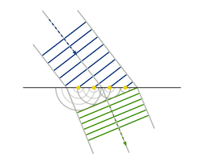
Representación esquemática del Principio de Huygens mostrando la propagación de un frente de onda
Aplicaciones del Principio de Huygens:
- Explicación de la difracción de ondas alrededor de obstáculos
- Comprensión de la refracción de ondas al cambiar de medio
- Análisis de la propagación de ondas a través de aberturas
- Base para la teoría ondulatoria de la luz
El Principio de Huygens-Fresnel, una versión más avanzada, incorpora el concepto de interferencia entre las ondas secundarias, lo que permite explicar con mayor precisión fenómenos como los patrones de difracción.
Principio de superposición
El Principio de superposición establece que cuando dos o más ondas coinciden en un mismo punto del espacio, la perturbación resultante es la suma algebraica de las perturbaciones individuales. Este principio es fundamental para entender fenómenos como la interferencia y la formación de ondas estacionarias.
Matemáticamente, si \(y_1(x,t)\) y \(y_2(x,t)\) son dos ondas, la onda resultante \(y_R(x,t)\) será:
\[ y_R(x,t) = y_1(x,t) + y_2(x,t) \]
Este principio se aplica a todas las ondas lineales, donde la respuesta del medio es proporcional a la perturbación.
Tipos de interferencia:
- Constructiva: Las ondas se refuerzan mutuamente, aumentando la amplitud
- Destructiva: Las ondas se cancelan parcial o totalmente
- Parcial: Combinación de efectos constructivos y destructivos
Condiciones para interferencia:
- Constructiva: Diferencia de fase = 0, 2π, 4π, ... (o diferencia de camino = 0, λ, 2λ, ...)
- Destructiva: Diferencia de fase = π, 3π, 5π, ... (o diferencia de camino = λ/2, 3λ/2, 5λ/2, ...)
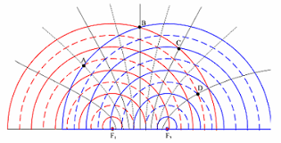
Visualización de un patrón de interferencia formado por la superposición de ondas
Velocidad del sonido
La velocidad del sonido varía según el medio a través del cual se propaga, dependiendo principalmente de las propiedades elásticas y la densidad del medio. A diferencia de la luz, el sonido viaja más rápido en medios más densos y elásticos (excepto en gases).
Velocidad del sonido con respecto a la temperatura
En el aire, la velocidad del sonido depende de la temperatura según la fórmula:
\[ v = 331.3 + 0.606 \cdot T \]
Donde:
- \(v\) es la velocidad del sonido en m/s
- \(T\) es la temperatura en grados Celsius
- 331.3 m/s es la velocidad del sonido en aire a 0°C
Velocidad del sonido en un alambre
En un alambre o varilla delgada, la velocidad del sonido viene dada por:
\[ v = \sqrt{\frac{Y}{\rho}} \]
Donde:
- \(Y\) es el módulo de Young del material
- \(\rho\) es la densidad del material
Velocidad del sonido en un sólido extendido
Para ondas longitudinales en un sólido extendido:
\[ v = \sqrt{\frac{Y(1-\sigma)}{\rho(1+\sigma)(1-2\sigma)}} \]
Donde \(\sigma\) es el coeficiente de Poisson del material.
Velocidad del sonido en un fluido
En un fluido (líquido o gas), la velocidad del sonido viene dada por:
\[ v = \sqrt{\frac{B}{\rho}} \]
Donde:
- \(B\) es el módulo de compresibilidad del fluido
- \(\rho\) es la densidad del fluido
Velocidad del sonido en un gas
Para un gas ideal, la velocidad del sonido puede expresarse como:
\[ v = \sqrt{\frac{\gamma RT}{M}} \]
Donde:
- \(\gamma\) es el coeficiente adiabático (razón de capacidades caloríficas)
- \(R\) es la constante universal de los gases
- \(T\) es la temperatura absoluta (en Kelvin)
- \(M\) es la masa molar del gas
Valores aproximados de la velocidad del sonido en diferentes medios a temperatura ambiente: aire (343 m/s), agua (1480 m/s), acero (5130 m/s). Esta gran diferencia explica por qué técnicas como la auscultación de rieles pueden detectar trenes a grandes distancias.
Vibración forzada y resonancia
La vibración forzada ocurre cuando un sistema oscilatorio es sometido a una fuerza externa periódica. Cuando la frecuencia de esta fuerza coincide o se aproxima a una de las frecuencias naturales del sistema, se produce el fenómeno de resonancia, caracterizado por un aumento significativo en la amplitud de las oscilaciones.
La ecuación para un oscilador armónico forzado con amortiguamiento es:
\[ m\frac{d^2x}{dt^2} + b\frac{dx}{dt} + kx = F_0\cos(\omega t) \]
Donde:
- \(m\) es la masa
- \(b\) es el coeficiente de amortiguamiento
- \(k\) es la constante elástica
- \(F_0\) es la amplitud de la fuerza externa
- \(\omega\) es la frecuencia angular de la fuerza externa
Ejemplos de resonancia:
- Columpio que se impulsa en el momento adecuado
- Copa de cristal que se rompe ante un sonido de frecuencia específica
- Puente de Tacoma Narrows que colapsó debido a vibraciones resonantes con el viento
- Sintonización de estaciones de radio
- Instrumentos musicales que amplifican ciertos tonos
La resonancia puede ser tanto beneficiosa como perjudicial. En instrumentos musicales y circuitos eléctricos, se aprovecha para amplificar señales deseadas. Sin embargo, en estructuras como edificios o puentes, puede provocar daños severos o incluso colapsos, por lo que los ingenieros deben diseñar con cuidado para evitar frecuencias de resonancia peligrosas.
Intensidad y nivel de intensidad sonora
La intensidad sonora es la potencia acústica (energía por unidad de tiempo) que atraviesa una unidad de área perpendicular a la dirección de propagación. El nivel de intensidad sonora (o nivel sonoro) es una medida logarítmica de la intensidad del sonido respecto a un valor de referencia, expresada en decibelios (dB).
La intensidad sonora se define como:
\[ I = \frac{P}{A} \]
Donde:
- \(I\) es la intensidad sonora (W/m²)
- \(P\) es la potencia acústica (W)
- \(A\) es el área atravesada por la onda (m²)
El nivel de intensidad sonora (β) se calcula como:
\[ \beta = 10 \log_{10}\left(\frac{I}{I_0}\right) \text{ dB} \]
Donde:
- \(\beta\) es el nivel de intensidad sonora (dB)
- \(I\) es la intensidad sonora medida
- \(I_0\) es la intensidad de referencia (10⁻¹² W/m², aproximadamente el umbral de audición humana)
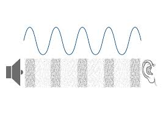
Visualización de ondas sonoras con diferentes amplitudes (relacionadas con su intensidad)
Niveles sonoros comunes:
- 0 dB: Umbral de audición
- 20-30 dB: Susurro, ambiente tranquilo de biblioteca
- 40-60 dB: Conversación normal
- 70-90 dB: Tráfico urbano, aspiradora
- 100-120 dB: Concierto de rock, maquinaria industrial
- >130 dB: Umbral de dolor, avión despegando
Efecto Doppler
El efecto Doppler es el cambio aparente en la frecuencia o longitud de onda de un sonido percibido por un observador que está en movimiento relativo respecto a la fuente sonora. Este fenómeno explica por qué el sonido de una sirena parece más agudo cuando se acerca y más grave cuando se aleja.
La frecuencia percibida por el observador viene dada por:
\[ f' = f \left( \frac{v \pm v_o}{v \mp v_s} \right) \]
Donde:
- \(f'\) es la frecuencia percibida
- \(f\) es la frecuencia emitida
- \(v\) es la velocidad del sonido en el medio
- \(v_o\) es la velocidad del observador (positiva si se acerca a la fuente)
- \(v_s\) es la velocidad de la fuente (positiva si se aleja del observador)
Los signos superiores se utilizan cuando el observador y la fuente se acercan, y los inferiores cuando se alejan.
Aplicaciones del efecto Doppler:
- Radares de velocidad para detectar vehículos
- Ecografías Doppler en medicina para medir el flujo sanguíneo
- Astronomía para determinar si las estrellas o galaxias se acercan o alejan (corrimiento al rojo)
- Sonar Doppler para detectar objetos en movimiento bajo el agua
- Meteorología para analizar el movimiento de sistemas de tormentas
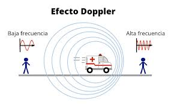
Representación del cambio en la longitud de onda debido al efecto Doppler
El efecto Doppler no solo se aplica a ondas sonoras, sino también a cualquier tipo de onda, incluidas las electromagnéticas. En el caso de la luz, este fenómeno se manifiesta como el corrimiento al rojo (redshift) cuando una fuente se aleja, o el corrimiento al azul (blueshift) cuando se acerca, siendo fundamental en la cosmología moderna para establecer que el universo está en expansión.
Óptica
Definición
La óptica es la rama de la física que estudia la luz, su comportamiento, propagación y sus interacciones con la materia. Abarca fenómenos como la reflexión, refracción, difracción, interferencia, polarización y dispersión de la luz, así como la formación de imágenes y los instrumentos ópticos.
La óptica es fundamental para entender cómo percibimos el mundo a través de la visión y ha permitido el desarrollo de tecnologías esenciales como telescopios, microscopios, láseres y sistemas de comunicación por fibra óptica.
Clasificación de la óptica
La óptica se divide tradicionalmente en dos grandes ramas, cada una con su propio enfoque y conjunto de principios:
Óptica geométrica:
Se basa en el modelo de rayos de luz que viajan en línea recta en medios homogéneos. Estudia la formación de imágenes mediante reflexión y refracción en espejos, lentes y prismas. Utiliza las leyes de la reflexión y la refracción (Ley de Snell) y es aplicable cuando las dimensiones de los objetos son mucho mayores que la longitud de onda de la luz.
Óptica física (u ondulatoria):
Considera la naturaleza ondulatoria de la luz y explica fenómenos que la óptica geométrica no puede, como la difracción, interferencia y polarización. Se basa en las ecuaciones de Maxwell del electromagnetismo y es necesaria para entender fenómenos como los colores en películas delgadas, hologramas y el funcionamiento de rejillas de difracción.
Fórmulas de la óptica
La óptica utiliza diversas ecuaciones y leyes para describir el comportamiento de la luz en diferentes situaciones. Algunas de las más importantes son:
Ley de Snell (refracción):
\[ n_1 \sin\theta_1 = n_2 \sin\theta_2 \]
Donde:
- \(n_1\) y \(n_2\) son los índices de refracción de los medios
- \(\theta_1\) es el ángulo de incidencia
- \(\theta_2\) es el ángulo de refracción
Ecuación de lentes delgadas:
\[ \frac{1}{f} = \frac{1}{s_o} + \frac{1}{s_i} \]
Donde:
- \(f\) es la distancia focal de la lente
- \(s_o\) es la distancia del objeto a la lente
- \(s_i\) es la distancia de la imagen a la lente
Distancia focal de una lente delgada:
\[ \frac{1}{f} = (n-1)\left(\frac{1}{R_1} - \frac{1}{R_2}\right) \]
Donde:
- \(f\) es la distancia focal
- \(n\) es el índice de refracción del material de la lente
- \(R_1\) y \(R_2\) son los radios de curvatura de las superficies de la lente
Ejemplos prácticos
La óptica explica numerosos fenómenos cotidianos y es la base de muchas tecnologías que utilizamos diariamente:
Arcoíris: ejemplo natural de dispersión de la luz
Fenómenos ópticos comunes:
- Reflexión: Espejos, superficies pulidas, reflejos en el agua
- Refracción: Lentes en gafas, efecto de "palo roto" en agua
- Dispersión: Arcoíris, prismas que descomponen la luz blanca
- Difracción: Patrones de luz alrededor de bordes finos, CDs
- Polarización: Gafas de sol polarizadas, pantallas LCD
Aplicaciones en distintas áreas
La óptica tiene aplicaciones en numerosos campos profesionales y científicos:
Arquitectura:
- Diseño de iluminación natural en edificios
- Fachadas que optimizan la entrada de luz solar
- Materiales con propiedades ópticas específicas
- Sistemas de control de luz y sombra
Ingeniería Civil:
- Sistemas ópticos para mediciones de precisión
- Sensores ópticos para monitoreo de estructuras
- Técnicas de fotogrametría para topografía
- Análisis de tensiones con métodos ópticos
Medicina:
- Instrumentos ópticos para diagnóstico (endoscopios, microscopios)
- Cirugía láser en oftalmología y dermatología
- Tecnologías de imagen médica (OCT, microscopía confocal)
- Tratamientos con terapia fotodinámica
Otras áreas:
- Telecomunicaciones: fibra óptica, transmisión de datos
- Fotografía: cámaras, lentes, sensores de imagen
- Astronomía: telescopios, espectrógrafos
- Dispositivos de visualización: pantallas, proyectores
- Industria: control de calidad, sensores ópticos
La óptica continúa siendo un campo en constante evolución. Los avances recientes en nanofotónica, metamateriales ópticos y óptica cuántica están abriendo nuevas posibilidades para tecnologías como computación óptica, camuflaje óptico y comunicaciones cuánticas.